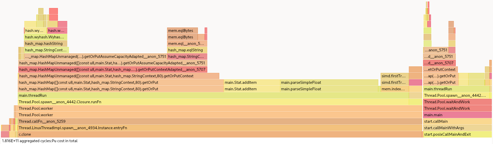
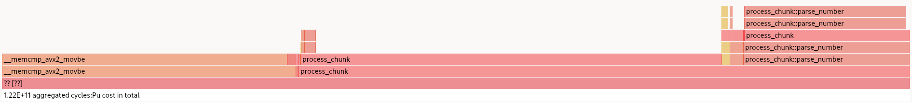
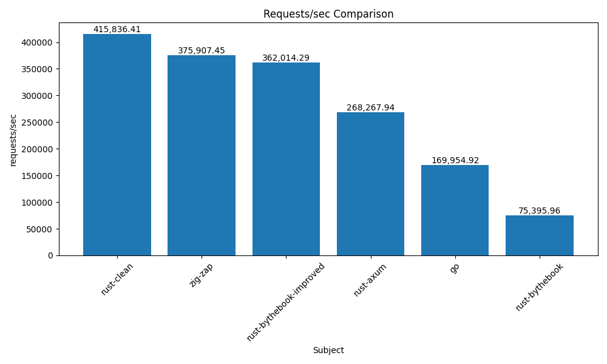
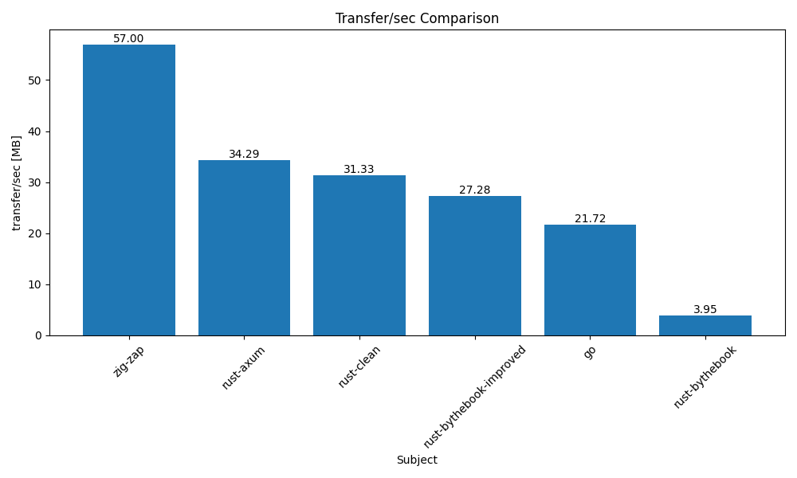

Zig documentation
Table of Contents
- 1. Introduction
- 2. Basics of the language
- 3. Comptime
- 4. Zig and C
- 5. Compilation - build system
- 6. Allocator
- 7. Comptime
- 8. Concurrency
- 9. Web frameworks
- 10. Case studies
- 11. Bibliography
1. Introduction
Nowadays, multiple languages have emerged to compete with the well-established C language. In fact, C is widely used in many places, learned by a lot of engineers, and used for many purposes. C is a powerful tool, but with great power comes great responsibility, in fact, memory leaks can easily occur by mistake.
That's why new languages come to find a better way to handle errors and memory. The Rust language relies strongly on its borrow checker to ensure safe memory but it comes at a cost: increased code complexity, that can slow down it's adoption.
In another case, the Zig language has a purpose to replace the C language. Zig wants to simplify the programming development experience with no hidden control flow and no macro to avoid complex mistakes. In contrary to rust, in Zig the memory is managed explicitly, you have to manually allocate and deallocate memory, just as in C. Zig offers different allocators that have different purposes, but some can detect memory leaks (General purpose allocator).
In the sections below, certain aspects of this programming language will be explored in greater depth.
Note that this documentation is generated from emacs with org-mode and that you can find the Github repository here.
1.1. What this documentation IS
This documentation is being worked on by 2 students from the HEIG-VD, in the context of a course for one and a Bachelor Thesis for the other. The goal of this documentation is to explore the Zig language in-depth, by first learning a few basics of the language we judge interesting/useful, and then by exploring more advanced topics.
This work is mainly aimed at engineers who already have experiences in C but might consider using Zig as a replacement/alternative. If you are a complete beginner, you might still learn a lot by reading this, but we highly encourage you to look at other ressources aimed at beginners aswell.
The big + this project offers compare to other guides/documentations is that here we are going to learn the language with literate programming (learning via interactive code exemples) because one snippet of code is worth 1000 words.
The advanced topics covered are mostly structured like so:
- Explain the concept and see what is done in other languages (mostly C)
- Show how to do it in Zig
- Conclusion about the current state of Zig on this topic
Note that we wrote this documentation with the help of AI assistants like ChatGPT and GH Copilot.
1.2. What this documentation IS NOT
This is not a guide to learn Zig as first-language, this documentation wants to go in-depth in certain parts of the language.
To understand what is described in this documentation, you should first read up on the basics of the Zig language, in particular, its guide, which contains a wealth of information.
1.3. How to use this documentation
This documentation is built to guide to user through different examples. Those examples have been created to use literate programming, in fact, the documentation is built on Emacs with the org mode. You can follow the examples and execute them directly in Emacs.
For that, you need to:
- Install the configuration created for that (see the section below)
- When all is configured, in Emacs you can select the example that you want to execute and use the command
C-c C-c. The output will be created or updated below the source block. If you want more documentation, you can check the Org babel documentation
You can follow the examples with the Zig version 0.12. But Zig is in constant evolution we may have to use other versions at some point in this guide, but if that is the case we will precise it.
1.4. Build Emacs configuration
TODO RAJOUTER les etapes EN PARTANT DE 0, IL FAUT IMAGINER QUE L UTILISATEUR N AIT PAS EMACS, RIEN DU TOUT
1.4.1. Install Zig emacs org babel plugin
Use C-c C-c (ctrl-c ctrl-c) to evaluate the code below.
It will add a shell interpreter inside org-babel configuration, it will be used when shell commands are evaluated.
(add-to-list 'org-babel-load-languages '(shell . t)) (org-babel-do-load-languages 'org-babel-load-languages org-babel-load-languages)
The shell command will clone an org babel zig plugin necessary to execute some Zig example directly in Emacs with Org babel.
The HEADER parameter below configures the directory path by default.
You can change the directory where the plugin will be installed (change the argument after the :dir).
git clone https://github.com/samuel-schlaeppy/ob-zig.el.git
1.4.2. Create an emacs configuration file
TODO le prof n a pas compris cette phrase entre guillemets et moi non plus apres relecture :-)
"To use the plugin installed before, you need to modify the first path to give the path where the plugin is installed (see section upper)," and a path to the Zig executable need also to be referenced.
After that, the following command C-c C-v t (ctrl-c ctrl-v t) will produce a zigIterativeProgramming.el file.
This file can be loaded from your emacs configuration (see section below).
(setq base_dir "~/PATH-WHERE-THE-ZIG-PLUGIN-IS-INSTALLED/ob-zig.el") (setq org-babel-zig-compiler "PATH-TO-THE-ZIG-EXECUTABLE")
(require 'package) (add-to-list 'package-archives '("melpa" . "https://melpa.org/packages/")) (package-initialize) (package-refresh-contents) (defun install-custom-pkg (pck) (if (featurep pck) (message "The package %s is already installed !" pck) (package-install pck) )) (install-custom-pkg 'zig-mode) (install-custom-pkg 'lsp-mode) (require 'lsp-mode) (add-hook 'zig-mode-hook #'lsp) (let ((local-file-path (expand-file-name "ob-zig.el" base_dir))) (setq org-babel-zig-compiler local-file-path) (load-file local-file-path) ) (custom-set-variables ;; custom-set-variables was added by Custom. ;; If you edit it by hand, you could mess it up, so be careful. ;; Your init file should contain only one such instance. ;; If there is more than one, they won't work right. '(org-babel-load-languages '((C . t) (emacs-lisp . t) (shell . t))))
1.4.3. Execute the configuration file from the configuration
You can put the code below in your init.el it will load the file produced before and load the necessary package to learn Zig with literate programming.
But you need the specify the directory path of the zigIterativeProgramming.el file (first line below).
(the init.el can be found in ~/.emacs.d/ or can be created in ~/.config/emacs/
(let ((file_dir "~/PATH-TO-THE-zigIterativeProgramming-file")) (load-file (expand-file-name "zigIterativeProgramming.el" file_dir)))
2. Basics of the language
2.1. Reading external files
There are multiple ways to do it in ZIG:
2.1.1. @embedFile
This method is simply going to embed the file in the binary at compile time.
Beware that by using this method the path to the file is going to be relative to the file you are calling it from and that the file must be in the same package.
By using the other methods below you can use a file from anywhere but relative to your root folder and not main.zig.
const input = @embedFile("input.txt"); std.debug.print("{s}", .{input});
2.1.2. Use an allocator to dynamically store the content of the file
By using the method: readToEndAlloc
// Alocator var gp = std.heap.GeneralPurposeAllocator(.{ .safety = true }){}; defer gp.deinit(); const allocator = gp.allocator(); // Path var path_buffer: [std.fs.MAX_PATH_BYTES]u8 = undefined; const path = try std.fs.realpath("./input.txt", &path_buffer); // Open file const file = try std.fs.openFileAbsolute(path, .{}); defer file.close(); // Read const file_content = try file.readToEndAlloc(allocator, std.math.maxInt(usize)); defer allocator.free(file_content);
2.1.3. Read the file and put it in a buffer
By using the method readAll
// Path var path_buffer: [std.fs.MAX_PATH_BYTES]u8 = undefined; const path = try std.fs.realpath("./input.txt", &path_buffer); // Open file const file = try std.fs.openFileAbsolute(path, .{}); defer file.close(); // Read var content_buffer: [1024]u8 = undefined; const size = try file.readAll(&content_buffer); std.debug.print("{s}", .{content_buffer[0..size]});
TODO reading files with org babel doesnt work yet idk why
Sources:
2.2. Errors
https://ziglang.org/documentation/0.11.1/#Errors
In ZIG errors are juste values.
Those values are those of an special type of enum "error".
When you declare your enum using this keyword instead of "enum", the compiler is going to know that those values are going to be errors, therefore they can be catched, tried, …
2.2.1. Handling errors in the application flow
Functions can return either a value or an error, this is done by adding the "!" to the return type of a function With the "!" the return type of the function below is the coerced "anyerror!u8"
Note 1: "anyerror" is just a u16 under the hood. Note 2: It is important that the syntax is ErrorSet!Payload if you write it by hand and NOT Payload!ErrorSet
When a function can return an error we have to either "try" or "catch" it.
fn maybeErrorMaybeValue(isError: bool) !u8 { // ... might return an u8 or an error if (isError) { return error.Bar; } else { return 2; } } test "return value or error" { // "try" version const res = try maybeErrorMaybeValue(false); // if error, return the error try std.testing.expect(res == 2); // "catch" version const err = maybeErrorMaybeValue(true) catch 3; try std.testing.expect(err == 3); } test "should panic" { _ = maybeErrorMaybeValue(true) catch unreachable; }
2.2.2. Errdefer
This exemple is taken from the official documentation Errdefer is a particularity of ZIG, it allows the user to execute some code when the function returns an error, it is useful exemple for deallocating variables you would have normally returned from the function, but since the function failed you deallocate that memory to avoid a memory leak.
fn createFoo(param: i32) !Foo { const foo = try tryToAllocateFoo(); // now we have allocated foo. we need to free it if the function fails. // but we want to return it if the function succeeds. errdefer deallocateFoo(foo); const tmp_buf = allocateTmpBuffer() orelse return error.OutOfMemory; // tmp_buf is truly a temporary resource, and we for sure want to clean it up // before this block leaves scope defer deallocateTmpBuffer(tmp_buf); if (param > 1337) return error.InvalidParam; // here the errdefer will not run since we're returning success from the function. // but the defer will run! return foo; }
2.2.3. Coercing
The rule is simple: you can coerce an error from a subset to a superset but you cannot coerce an error from a superset to a subset
const SuperErrors = error{ Foo, Bar, Baz, }; const SubErrors = error{ Foo, Bar, }; test "coerce subset to superset" { tac(SubErrors.Foo) catch {}; // PASSED } test "coerce superset to subset" { tic(SuperErrors.Foo) catch {}; // FAILED } fn tic(err: SuperErrors) SubErrors { return err; } fn tac(err: SubErrors) SuperErrors { return err; }
2.3. Code styles
2.3.1. Style guide
- fmt
First it is important to know that Zig comes with a formatter that you can use using:
zig fmt file.zig
This util is going to enforce basic things for you like:
- Indentation
- Braces alignment
- Line length
- ….
- Naming conventions
TitleCaseTypeName: for types and structs that are callable (for "classes" in other languages basically)camelCaseFunctionName: for functionssnake\_case\_variable_name: for variables and everything else
2.3.2. undefined and null values
TODO for some reason the 2 org block code are not working, maybe i should "testsuite" TODO how can i make the second one print the error ?
In Zig you can leave variables uninitialized, but you have to do that explicitly contrary to C where you can leave variables uninitialized and never truly notice it. Note that leaving the value undefined is going to leave the memory of this variable to some complete nonsense value (except in Debug mode where it will be set to 0xaa)
const my_var: u8 = undefined; std.debug.print("my_var: {}\n", .{my_var});
This is to be avoided as much as possible, if you have some in your code it might makes sense to use an Optional type instead so that compiler can scream at you :)
const my_var: ?u8 = null; // .? is syntaxic sugar for "orelse unreachable" which is going // unreachable is going to emit a panic (unable to unwrapp null) ! // THIS CODE WILL PANIC IF UNCOMMENTED // _ = my_var.?; // if value is "null" then "42" will be assigned const value: u8 = my_var orelse 42; // print 42 because value was null before std.debug.print("my_var = {}\n", .{value});
2.3.3. Zen
Zig encourages you to use the Zen philosophy, they reflect well the spirit behind Zig, here they are:
- Communicate intent precisely.
- Edge cases matter.
- Favor reading code over writing code.
- Only one obvious way to do things.
- Runtime crashes are better than bugs.
- Compile errors are better than runtime crashes.
- Incremental improvements.
- Avoid local maximums.
- Reduce the amount one must remember.
- Focus on code rather than style.
- Resource allocation may fail; resource deallocation must succeed.
- Memory is a resource.
- Together we serve the users.
Sources: https://ziglang.org/documentation/master/#Type-Coercion-undefined https://nathancraddock.com/blog/zig-naming-conventions/o https://ziglang.org/documentation/master/#undefined https://ziglang.org/documentation/master/#Style-Guide https://github.com/ziglang/zig/blob/master/lib/std/fmt.zig
2.4. Zig version manager
Using ZIG before 1.0 might require you to often switch between master and the last official release.
One solution would be to install both (or more) versions of ZIG and switch the PATH environment variable to the version you want to use.
But the best solution is to use the ZIG version manager, which is a tool that allows you to install and switch between different versions of ZIG.
We recommend using ZVM (Zig Version Manager ^^) which is a simple and easy to use tool. (https://github.com/tristanisham/zvm)
2.4.1. Basic usage
Installing the tool:
curl https://raw.githubusercontent.com/tristanisham/zvm/master/install.sh | bash echo "# ZVM" >> $HOME/.profile echo export ZVM_INSTALL="$HOME/.zvm/self" >> $HOME/.profile echo export PATH="$PATH:$HOME/.zvm/bin" >> $HOME/.profile echo export PATH="$PATH:$ZVM_INSTALL/" >> $HOME/.profile
Listing all the versions available to download:
zvm ls --all
Downloading a specific version:
zvm i master
Display all your downloaded versions:
zvm ls
Use one of those versions:
zvm use master
There are other commands available, you can check them by running: 'zvm help' or checking the repository: https://github.com/tristanisham/zvm
2.5. defer
If you are coming from the C world, this keyword might surprise you and greatly impact your life, if you already know it from other languages like Go, bear with us to see how it is particulary useful in a language that has to manage its own memory.
`defer` is a really simple keyword all it does is: execute code at the end of the current scope.
Might not sound like much, because you might think "I could just put it at the of my scope", you are not entirely wrong but:
- Doing so makes your code less readable/understandable, because you have to scroll to the end of the function to find the code you might need that is related something hundred of lines above.
- Humans are error proned and sometimes forget, by instantly adding a defer after the related code you can be sure not to forget it later.
TODO mettre un lien vers errors/errdefer
2.5.1. Exemple
Here is an exemple where `defer` really shines:
2.5.2. Freeing memory
In the following code, the programmer forgot to free the memory assigned to ptrcoolnumber by calling destroy. Memeory leaks like that could be hard to find in a large codebase because you would have to check every single allocation and find its corresponding free somewhere in the code.
test "we sometime forget to free memory" { const allocator = std.testing.allocator; // Allocator that detect memory leaks const bytes = try allocator.alloc(u64, 10); for (0..9) |i| { bytes[i] = i; } // BLA BLA BLA lot of code normally here :) const ptr_cool_number = try allocator.create(u64); ptr_cool_number.* = bytes[2]; //allocator.destroy(ptr_cool_number); allocator.free(bytes); }
But this could be better by using the defer keyword and writing the dealloaction code right after the allocation one. This way if you have a memory leak, you just have to see everywhere you allocated and be sure there is a deallocation next to it.
test "and sometimes we just use defer and life is better" { const allocator = std.testing.allocator; // Allocator that detect memory leaks const bytes = try allocator.alloc(u64, 10); defer allocator.free(bytes); for (0..9) |i| { bytes[i] = i; } const ptr_cool_number = try allocator.create(u64); defer allocator.destroy(ptr_cool_number); ptr_cool_number.* = bytes[2]; }
2.6. Testing code
## Tracking ### Race conditions
### Memory leak #### C allocations For high performances and very few safety checks, you might want to use the std.heap.callocator.
Those allocations are not tracked by the Zig runtime, so you will have to use a tool like Valgrind to track memory leaks which can be done via the std.
TODO exemple, j attends d avoir eu le cours de HPC sur valgrind
#### Zig allocations The General Purpose Allocator (GPA) is a general-purpose memory allocator that is used by the Zig standard library. Its advantages over the other implementations in the std it that it is designed for safety over performance.
Note that all those problems are given to us a runtime and not compile time.
It can in fact detect memory problems like:
- memory leaks
- use-after-free
- double-free
But it cannot yet detect things like data races (which you could think it could with the .threadsafe option).
What .threadsafe does is that it makes the allocator thread-safe, meaning that it can be used in a multi-threaded environment without any problem. If you don't and use the same allocator for multiples threads, the allocator might not behave correctly.
You can have more informations on the topic following a discussion I had on the Zig discord server here.
#### Memory leaks In the exemple below, the memory allocated to a is freed (with destroy here), if you were to comment the destroy line, the GPA would detect a memory leak and tell you what memory leaked giving a stacktrace and the memory address of the leaked memory.
var gpa = std.heap.GeneralPurposeAllocator(.{ .safety = true }){}; defer { const status = gpa.deinit(); // deinit is going to detect memory leaks, calls gpa.detectLeaks() under the hood if (status == .leak) { std.debug.print("Memory leak detected\n", .{}); } else { std.debug.print("No memory leak detected\n", .{}); } } const allocator = gpa.allocator(); const a = try allocator.create(u8); allocator.destroy(a); // Memory freed
#### Use after free Following the previous exemple we are going to try to access the memory after it has been freed, this will result in a use-after-free error.
var gpa = std.heap.GeneralPurposeAllocator(.{ .safety = true }){}; defer _ = gpa.deinit(); // deinit is going to detect memory leaks, calls gpa.detectLeaks() under the hood const allocator = gpa.allocator(); const a = try allocator.create(u8); allocator.destroy(a); // Memory freed a.* = 4; // USE AFTER FREE
#### Invalid free By still keeping the previous exemples, we are going to double free and get an error.
var gpa = std.heap.GeneralPurposeAllocator(.{ .safety = true }){}; defer _ = gpa.deinit(); // deinit is going to detect memory leaks, calls gpa.detectLeaks() under the hood const allocator = gpa.allocator(); const a = try allocator.create(u8); allocator.destroy(a); // Memory freed allocator.destroy(a); // DOUBLE FREE
### Sources
2.7. Compiler messages
In a language that aims to report most of its issues at compilation time, it is important to have clear and concise error messages. However at the time we are writing this it is sadly not the case. Here are a few compiler messages that you might encounter that are very hard to understand:
2.7.1. Trying to print without the correct struct syntax
We are going to start with the most basic one, everyone doing Zig did at least one time
std.debug.print("Hello I am {} years old", 12);
/home/tetratrux/.zvm/0.11.0/lib/std/fmt.zig:87:9: error: expected tuple or struct argument, found comptime_int
@compileError("expected tuple or struct argument, found " ++ @typeName(ArgsType));
Is the type of error you should get, from reading that we cant even know from where the problem is in our code, no line number, no stacktrace, nothing.
But if you read the message carefully and you know that print second argument except a struct with the .{} syntax, you realize that you passed a value with the wrong type.
So when you get that type of error message make sure that you are printing your message correctly with the second argument that should be a struct with the .{} syntax.
std.debug.print("Hello I am {} years old", .{12});
This is an ongoing issue by the time I am writing this in 0.12.0
2.8. TCP stream
2.8.1. TODO How Zig manages stream
Does Zig manage tcp stream with the OS stream or has it created its own implementation ?
3. Comptime
Zig has a concept called comptime, it's stands for "compile-time".
Comptime is used to evaluate an expression at compile time and not at runtime.
In comparison with C, Zig comptime has the purpose of replacing marco with a more explicit syntax.
In fact, C's macro tends to be error-prone when using it.
The advantage of using comptime over macro is the type safety of Zig when writing comptime.
3.1. When to use and when NOT to use it
3.1.1. When to use it
Because the compiler can now do things at compilation time, leaving less work to be done at runtime. (if the compiler gives you the power to do things at compile time so easily, you should use it ^^)
So you should basically try to use it as much as you can.
3.1.2. When NOT to use it (source: ziglings)
The following contexts are already IMPLICITLY evaluated at compile time, and adding the 'comptime' keyword would be superfluous, redundant, and smelly:
- The container-level scope (outside of any function in a source file)
- Type declarations of:
- Variables
- Functions (types of parameters and return values)
- Structs
- Unions
- Enums
- The test expressions in inline for and while loops
- An expression passed to the @cImport() builtin
3.2. Compile-time evaluation
3.2.1. Compile-time variable
In Zig, there are variables that can be evaluated at compile-time, in fact, Zig allows computing mutating variables at compile-time but all the inputs need to be known also at compile-time. If not, the compiler will throw a compile error. [1]
For a mutating variable at compile-time, Zig requires naming the variables with a comptime var.
But if the variable is a constant, the compiler requires to use a const.
Like in the example below, the variable named variableAtCompileTime is evaluated at compile-time because all the inputs are known.
On the other hand, the variable named constantAtRuntime cannot be a comptime variable because its dependency is based on unknown before runtime.
Moreover, in the example, the inline for is used to unroll the for loop.
This allows to use for loops in comptime indeed, if a standard for loop is used, it will cause an error because the capture value will be evaluated at runtime.[1]
const stdout = std.io.getStdOut().writer(); const randVariable = std.crypto.random.float(f32); const selectedConstant = 6; const constantAtRuntime = randVariable * selectedConstant; comptime var variableAtCompileTime = selectedConstant * selectedConstant; const array = [_]comptime_int { 3, 2, 1}; inline for (array) |item| { variableAtCompileTime += item; } try stdout.print("constant-at-runtime {d:.2}\n", .{constantAtRuntime}); try stdout.print("variable-at-compile-time {d}", .{variableAtCompileTime});
| constant-at-runtime | 4.33 |
| variable-at-compile-time | 42 |
3.2.2. Compile-time expression
In Zig, an expression can have a comptime to tell the compiler to evaluate the expression at compile-time.
Like a compile-time variable, if an expression cannot be evaluated at compile-time, a compile-time error will be thrown.
With a prefixed comptime keyword Zig can interpret a function at compile-time instead of runtime. [1]
A good example of demonstrating comptime expression is in the standard documentation [1]. The results show that the comptime expression is faster than the runtime one when the code is executed (runtime) because the work has already been done. But this will work only with code that hasn't runtime dependency code.
const Timer = std.time.Timer; const stdout = std.io.getStdOut().writer(); fn fib(iteration: u32) u32 { if (iteration < 2) return iteration; return fib(iteration - 1) + fib(iteration - 2); } test "comptime fib" { var timer = try Timer.start(); const result = comptime fib(15); const elapsed = timer.read(); try stdout.print("Elasped-comptime: {d:0.2}ns\n", .{elapsed}); try std.testing.expectEqual(610, result); } test "fib" { var timer = try Timer.start(); var result = fib(15); const elapsed = timer.read(); try stdout.print("Elasped-runtime: {d:0.2}ns\n", .{elapsed}); try std.testing.expect(610 == result); }
3.2.3. Compile-time parameter
Zig implements generic by using duck typing at compile-time. To use generic, Zig needs to know the type at compile-time.
fn greater(comptime T: type, array: []const T) !?T { var max: ?T = null; for (array) |item| { if (max) |m| { if (m < item) { max = item; } } else { max = item; } } return max; } test "should return the max of an i32 array" { const intArray = [_]i32{ 2, 9, 4, 6, 7, 1}; const result = try greater(i32, &intArray); try std.testing.expect(result == 9); } test "should return the max of an f32 array" { const floatArray = [_]f32{ 2.34, 14.55, 4.12, 6.876, 7.111 }; const result = try greater(f32, &floatArray); try std.testing.expect(result == 14.55); }
But with duck typing, if the same method is used, an error will be thrown at compile time:
test "should fail with bool" {
const boolArray = [_]bool{ true, false, true, true };
const result = greater(bool, &boolArray);
}
The error will be:
error: operator < not allowed for type 'bool'
Moreover, comptime can also be used as a type definition.
For this, the function needs to return a type.
The example below is based on the zig guide [2], it's shows that it can define a new type with a function.
fn Matrix( comptime T: type, comptime width: comptime_int, comptime height: comptime_int, ) type { return [height][width]T; } fn Matrix3x3( comptime T: type, ) type { return Matrix(T, 3, 3); } test "returning a type" { try std.testing.expect(Matrix(f32, 4, 4) == [4][4]f32); } test "returning a 3x3 matrix" { try std.testing.expect(Matrix3x3(f32) == [3][3]f32); }
3.3. Metaprogramming
3.3.1. @TypeOf
The @TypeOf builtin function can be used to take as a parameter an expression and return a type.
3.3.2. @typeInfo
This built-in function provides type reflection, it returns information on type.
See the example Example with a custom CSV writer based on type to have a view of the usability.
3.4. TODO Optimization
inline for / while
3.4.1. How log works in Zig
In the C language, a common use to use debug print is with Marco.
Like in this example, if the DEBUG is defined to 1 the code will print the debug info.
If the DEBUG is not set, at the compilation, all the print information will be removed.
#define DEBUG 1 #if DEBUG #define TRACE(x) printf x; #else #define TRACE(x) #endif int main() { TRACE(("Hello World! : %d\n", 12)); }
In Zig, logging uses this same principle, a message level is set at the start of the program (at compile-time) and if the log is not enabled, all the code about the print is removed. However, if the log level is greater than the limit, the message will be printed.
The code below shows an extract of the standard library for logging.
fn log( comptime message_level: Level, comptime scope: @Type(.EnumLiteral), comptime format: []const u8, args: anytype, ) void { if (comptime !logEnabled(message_level, scope)) return; std.options.logFn(message_level, scope, format, args); }
In addition, Zig provides some helper functions for logging, such as :
std.log.debugstd.log.infostd.log.warnstd.log.err
And if the release mode is set to Debug, the debug log will be printed.
But if the release mode is set to Release*, the debug log will not print, there is no need to configure the logging to have this behavior.
3.5. Generic data structures
To create a generic data structure, the same pattern is used as a comptime parameter.
A function needs to return an anonymous struct as a type type.
In a generic data structure, the @This() is used to get the type of the data structure because it is anonymous.
Moreover, a generic data structure can have two type of function:
- a function that can be called on the structure type
- a function that can be called on the instance of the structure.
To have an instance function, the first argument needs to be a parameter of the type of the struct.
That's why a constant Self is used with @This().
And after that, the parameter self can be used to get the members of the struct.
The example shows the difference between a function that can be called on a struct and a function that can be called on an instance of a struct.
pub fn MyStruct(comptime T: type) type { return struct { const Self = @This(); myNumber: T, pub fn structFunction(writer: anytype) !void { try writer.print("structFunction\n", .{}); } pub fn instanceFunction(self: *Self, writer: anytype) !void { try writer.print("structInstance: {d}\n", .{self.myNumber}); } }; } pub fn main() !void { const stdout = std.io.getStdOut().writer(); try MyStruct(f32).structFunction(stdout); var myStruct = MyStruct(f32){ .myNumber = 42, }; try myStruct.instanceFunction(stdout); }
In Zig, a structure name can be explicitly given or Zig can infer the name of a struct when there are created:
fn MyStruct(comptime T: type) type { return struct { myNumber: T, }; } pub fn main() !void { // The structure name is infered const myStruct1 = MyStruct(i32) { .myNumber = 42, }; _ = myStruct1; // The structure has a explicit name const intStruct = MyStruct(i32); const myStruct2 = intStruct { .myNumber = 42, }; _ = myStruct2; }
Here's an compete example of an generic linked list :
pub fn LinkedList(comptime T: type) type { return struct { const Node = struct { data: T, prev: ?*Node, next: ?*Node, }; const LinkedListError = error{headNull}; const Self = @This(); allocator: std.mem.Allocator, head: ?*Node, len: u32 = 0, pub fn init(allocator: std.mem.Allocator) Self { return Self{ .head = null, .allocator = allocator, }; } pub fn deinit(self: *Self) void { var curr = self.head; while (curr) |currNotNull| { const node = currNotNull; curr = currNotNull.next; self.allocator.destroy(node); } self.len = 0; } pub fn push(self: *Self, value: T) !void { var node = try self.allocator.create(Node); node.*.data = value; self.len += 1; if (self.head) |head| { node.next = head; head.prev = node; self.head = node; } else { self.head = node; node.*.next = null; node.*.prev = null; } } }; } test "Should push one item into a i32 list" { const intLinkedList = LinkedList(i32); var list = intLinkedList.init(std.testing.allocator); defer list.deinit(); const expected = 42; try list.push(expected); const result = list.head.?.data; try std.testing.expect(expected == result); } test "Should push one item into a f32 list" { const intLinkedList = LinkedList(f32); var list = intLinkedList.init(std.testing.allocator); defer list.deinit(); const expected = 3.1415; try list.push(expected); const result = list.head.?.data; try std.testing.expect(expected == result); }
3.6. Example with a custom CSV writer based on type
This example shows that Zig has a type reflection with the keyword @typeInfo.
The goal of this example is to create CSV output with a generic struct as input.
Only with the try csv.stringify(&arrayList, stream.writer()); function the CsvWriter can infer at comptime the struct pass as argument.
For this example, a basic struct named Person will be transformed to CSV.
pub fn CsvWriter(comptime T: type) type { return struct { const Self = @This(); const Config = struct { separator: u8 = ',', }; config: Config, pub fn init(config: Config) Self { return Self{ .config = config, }; } pub fn stringify(self: *Self, arrayList: *std.ArrayList(T), writer: anytype) !void { try writeHeader(self, &writer); for (arrayList.items) |item| { try writeType(self, item, &writer); } } fn writeHeader(self: *Self, writer: anytype) !void { const fields = std.meta.fields(T); inline for (fields, 1..) |field, i| { try writer.print("{s}", .{field.name}); if (fields.len != i) { try writer.print("{c}", .{self.config.separator}); } } try writer.print("\n", .{}); } fn writeType(self: *Self, item: T, writer: anytype) !void { const fields = std.meta.fields(T); if (@TypeOf(fields) != []const std.builtin.Type.StructField) @compileError("The type is not the a struct"); inline for (fields, 1..) |field, i| { const f = @field(item, field.name); switch (@typeInfo(@TypeOf(f))) { .Int => try writer.print("{d}", .{f}), .Float => try writer.print("{d}", .{f}), .Pointer => |pointer| { if (pointer.size == std.builtin.Type.Pointer.Size.Slice and pointer.child == u8) { try writer.print("{s}", .{f}); } else { @compileError("Currently, the CsvWriter dosen't support complex types"); } }, else => @compileError("Currently, the CsvWriter dosen't support complex types"), } if (fields.len != i) { try writer.print("{c}", .{self.config.separator}); } } try writer.print("\n", .{}); } }; } const Person = struct { sexe: []const u8, name: []const u8, date: u32, }; pub fn main() !void { const stdout = std.io.getStdOut().writer(); var gpa = std.heap.GeneralPurposeAllocator(.{}){}; const person1 = .{ .sexe = "M", .name = "Lucas", .date = 2000 }; const person2 = .{ .sexe = "F", .name = "Ava", .date = 2020 }; const person3 = .{ .sexe = "F", .name = "Sophia", .date = 1989 }; var arrayList = std.ArrayList(Person).init(gpa.allocator()); defer arrayList.deinit(); try arrayList.append(person1); try arrayList.append(person2); try arrayList.append(person3); var buffer: [1024]u8 = undefined; var stream = std.io.fixedBufferStream(buffer[0..]); const personCsvWriter = CsvWriter(Person); var csv = personCsvWriter.init(.{ .separator = ' ' }); try csv.stringify(&arrayList, stream.writer()); try stdout.print("{s}", .{stream.getWritten()}); }
| sexe | name | date |
| M | Lucas | 2000 |
| F | Ava | 2020 |
| F | Sophia | 1989 |
3.7. Bonus
Here is a very nice blog written by a core member of the ZIG community if you want to dig further: https://kristoff.it/blog/what-is-zig-comptime/
<<<<<<< HEAD
4. Zig and C
4.1. Introduction
The interoperability between Zig and C is one of the most important feature of Zig. But why ?
It is one of the main goal of Zig to incrementally improve your C/C++/Zig codebase, so you could use C code almost as much as easy as you could use Zig code.
It allows to have both of a modern language and a mature ecosystem.
4.2. Main differences between Zig and C in the syntax
There are a few main differences between the 2 languages that you have high chance of encountering but obviously not all of them are listed here.
4.2.1. Types
Here you can find all the primitive types in Zig and their C equivalent:
https://ziglang.org/documentation/master/#Primitive-Types
https://ziglang.org/documentation/master/#C-Type-Primitives
TODO would it be better if i do the array in the doc rather than having a link to it ?
4.2.2. Loops
In Zig, the for loop is not used as much as in C. Instead, the while loop is used more often. The for loop is used when iterating over multiples elements of a container (typically slices or arrays), so it basically is a kind of foreach loop. In all the other cases the while loop is used.
const items = [_]u16 { 1, 4, 0, 1 }; var sum: u16 = 0; for (items) |value| { sum += value; } std.debug.print("Sum: {}\n", .{sum});
for (0..3) |i| { i += 1; std.debug.print("i: {}\n", .{i}); }
4.2.3. Pointers
Zig has 2 different pointers:
- Single-item pointers: *T
- Many-item pointers: [*]T
Which can both be optional by adding a "?".
But actually…. there is a third pointer type:
- The C pointer: [*c]T
This one is to be avoided as much as possible. The only reasons for its existence is for the translation from C code to Zig code, when the translater is not able to know what to convert it to in Zig (eg. sometimes it does not know if it can convert it to a non-optional pointer or not which could cause UBs).
4.2.4. Type conversions
Since in Zig there is no implicit conversions, depending on the project you might end up having "ugly" code with a lot of explicit type conversions. The code is more verbose but it is also less error-prone. Exemple: ZIG:
fn rgb_to_grayscale_1d(img: *imageh.img_1D_t, result: *imageh.img_1D_t) void { var i: usize = 0; while (i < @as(usize, @intCast(img.height * img.width))) : (i += 1) { const index = i * @as(usize, @intCast(img.components)); const grayscale_value: u8 = @intFromFloat(imageh.FACTOR_R * @as(f64, @floatFromInt(img.data[imageh.R_OFFSET + index])) + imageh.FACTOR_G * @as(f64, @floatFromInt(img.data[imageh.G_OFFSET + index])) + imageh.FACTOR_B * @as(f64, @floatFromInt(img.data[imageh.B_OFFSET + index]))); result.data[i] = grayscale_value; } }
C:
void rgb_to_grayscale_1D(const struct img_1D_t *img, struct img_1D_t *result) { printf("height: %d", img->height); for (size_t i = 0; i < img->height * img->width; i++) { int index = i * img->components; uint8_t grayscale_value = (uint8_t)(FACTOR_R * img->data[R_OFFSET] + FACTOR_G * img->data[G_OFFSET] + FACTOR_B * img->data[B_OFFSET]); result->data[i] = grayscale_value; } }
4.3. How to call a C function from Zig
Add those lines to your build.zig file:
exe.addIncludePath(.{ .path = "c-src" }); // Folder containing the C files
exe.linkLibC(); // Link the C standard library (which is zig own libc btw)
Then you can call the C functions like this from your Zig code:
const std = @import("std"); const c_hello = @cImport({ @cInclude("hello.c"); }); pub fn main() !void { c_hello.hello(); const res = c_hello.add(1, 2); std.debug.print("1 + 2 = {d}\n", .{res}); }
Note that you can only do 1 @cImport per project. So what i recommend you to do is create a file containing all the c libraries you need in a file like so:
pub const c = @cImport({ @cInclude("stdio.h"); @cInclude("stdlib.h"); @cInclude("image.h"); });
Then call this zig file in your other zig files.
4.4. How to call a Zig function from C / Continuing a C project with Zig
You can continue your C project without using Clang or GCC but by using Zig with all its toolchain it comes with.
In order to have a c file (main.c) as the entry point of your project using the zig build tool you have to add/comment the following lines to your build.zig file:
const exe = b.addExecutable(.{ .name = "c_project", // .root_source_file = b.path("src/main.zig"), .target = target, .optimize = optimize, }); exe.root_module.addCSourceFile(.{ .file = .{ .path = "src/main.c" }, .flags = &.{"-std=c99"} }); exe.linkLibC();
If you want to have more C files than just main.c you can add them like so:
exe.addCSourceFile(.{ .file = .{ .path = "c-src/image.c" }, .flags = &.{"-std=c99"} });
TODO utiliser code zig dans project C https://zig.guide/working-with-c/calling-conventions
4.4.1. export and extern keywords
export make the the function visible from outside so that the C ABI can see it.
extern is used to link against an exported variable from an other object.
Zig documentation for those 2 keywords.
TODO jai oublie d ajouter du code zig, ne pas oublier export/extern
TODO pros and cons of using zig toolchain instead of clang or gcc
4.5. How is it done under the hood
When you do @cImport(@cInclude("foo.h")) in your zig code it runs translate-c and exposes the function and type definitions.
TODO talk about C ABI
4.6. Util to translate C code to Zig
zig translate-c is an util built in the zig toolchains that allows you to translate C code to Zig code. You can translate any code but the code is going to be UNREADABLE, so I would not recommend this tool if you plan on modifying the code afterwards. You have better time importing the C code in your Zig code. Note that if you want to translate a C file that uses the libc you have to add the -lc flag like so:
zig translate-c main.c -lc
4.6.1. Comparison with other langauges that use C code
To test if integrating C code in Zig projects is really as seemless as some claims, I have decided to compare the C integration with Python aswell.
In order to do that I wrote a small C library:
int add(int a, int b) { return a + b; }
What I am going to do is test how much time it takes each program to run this function x times. (in this case x = 100'000'000)
Note: I didnt use any optimization in flag in python (because it did not change anything) and neither in Zig because I didnt want the compiler to try to optimize the code and be lazy.
Then in order to compare the 2 languages I wrote 4 programs:
- Zig code that has and add function implementation in Zig
const std = @import("std"); fn add(a: u32, b: u32) u32 { return a + b; } pub fn main() !void { var i: usize = 0; while (i < 100000000) : (i += 1) { _ = add(3, 7); } std.debug.print("done\n", .{}); }
Result: ~0.38sec
- Vanilla Python code that has and add function implementation in Python
def add(a, b): return a + b for i in range(100000000): add(3, 7) print("done!")
Result: ~10sec
- Zig code that imports the C library
const std = @import("std"); pub const c = @cImport({ @cInclude("mylib.c"); }); pub fn main() !void { var i: usize = 0; while (i < 100000000) : (i += 1) { _ = c.add(3, 7); } std.debug.print("done!\n", .{}); }
Result: ~0.41sec
- Python code that imports the C library
import ctypes mylib = ctypes.CDLL('./mylib.so') mylib.add.argtypes = (ctypes.c_int, ctypes.c_int) mylib.add.restype = ctypes.c_int for i in range(100000000): result = mylib.add(3, 4) print("Result of last addition:", result)
Result: ~50sec
TODO faire un joli graphique quand jaurai d autres languages TODO idk if it would be possible to compile my c library and then use it in my python code, and all of that all in emacs, that would be cool :) TODO do with other languages aswell
- Conclusion
First thing that we notice immediately is how much faster the Zig code is compared to the Python code. This is not surprising since Zig is a compiled language and Python is an interpreted language.
TODO why is python so slow ?
The second interesting thing is that the 2 Zig codes dont vary that much (if they even do) compared to the 2 python codes which have a 5x ratio. This is interesting because it shows that the overhead of calling a C function from Zig is not that big (in fact it is even not existent since all the compiler does is translating the C code to Zig code at compilation time).
We can conclude that calling C code from Zig is really seemless, because at runtime … everything is Zig code.
4.7. Notes
TODO For some unkown reason yet my LSP becomes very slow when working in a Zig project with C files and sometimes crashes. I have to investigate this further.
Sources:
- https://ziglang.org/documentation/master/#C-Pointers
- https://ziglang.org/documentation/master/#C-Type-Primitives
- https://zig.news/sobeston/using-zig-and-translate-c-to-understand-weird-c-code-4f8
- https://mtlynch.io/notes/zig-call-c-simple/
- https://ziglang.org/documentation/master/#cImport-vs-translate-c
5. Compilation - build system
5.1. TODO Comptime
5.2. TODO How to use the build system
5.3. Build modes
Zig build modes are way easier for beginners to graps compared to C
There are only 4 different build modes:
- Debug (default)
- ReleaseFast
- ReleaseSafe
- ReleaseSmall
You can check them in more details here
There are also a few other options you can tweak like avx here
5.3.1. TODO Build steps
5.3.2. TODO Generate automatically documentation
In Zig there is an experimental feature, it's automatically generated documentation.
It will scan all the public structures and functions and will create documentation.
Moreover, the comments like /// are used to give more information to types.
This example is created with the help of the build.zig of the Zig language GitHub repository.
This is used the same way as the Zig teams auto-generate the standard library documentation. See: build.zig
pub fn build(b: *std.Build) void { const autodoc_test = b.addTest(.{ .root_source_file = .{ .path = "src/main.zig" }, }); const install_std_docs = b.addInstallDirectory(.{ .source_dir = autodoc_test.getEmittedDocs(), .install_dir = .prefix, .install_subdir = "doc", }); const doc_step = b.step("docs", "Generate documentation"); doc_step.dependOn(&install_std_docs.step); doc_step.makeFn = generateDocumentation; } fn generateDocumentation(self: *std.build.Step, progress: *std.Progress.Node) !void { _ = self; _ = progress; std.log.info("The documentation has been generated", .{}); }
5.3.3. Strip output binary in Zig in Linux
ELF format
In an ELF executable there are various sections that hold program and control information.
For example:
.bss: it holds uninitialized variables and data..text: it holds the instruction of the program.debug: it holds unspecified information for debugging
Removing the debug symbols will reduce his size, make it harder to reverse engineering, and improve speed performance.
By default, Zig will produce an executable that has all the debug symbols.
However, Zig has reproduced a drop-in replacement for the program GNU objcopy.
To strip an output in the zig command line :
zig build-exe -fstrip src/main.zig
To be sure that the output executable is stripped, the command file can be useful :
file main
And the output :
main: ELF 64-bit LSB executable, x86-64, version 1 (SYSV), statically linked, stripped
With the Zig build system (build.zig) there is an option to strip an executable :
const target = b.standardTargetOptions(.{}); const optimize = b.standardOptimizeOption(.{}); var exe = b.addExecutable(.{ .name = "linkedlist", .root_source_file = .{ .path = "src/main.zig" }, .target = target, .optimize = optimize, }); exe.strip = true;
If the option strip is set to false, we have :
$file linkedlist linkedlist: ELF 64-bit LSB executable, x86-64, version 1 (SYSV), statically linked, with debug_info, not stripped
And with the option to true :
$file linkedlist linkedlist: ELF 64-bit LSB executable, x86-64, version 1 (SYSV), statically linked, stripped
5.3.4. Separate debug symbols from ELF executable
The chapter above shows how to remove all the symbols for the executable directly in the Zig build system.
In this section, the interest is more about the Zig objcopy command.
In fact, Zig has implemented his own objcopy utils to strip, and remove symbols like the objcopy from the bin utils (GNU utils).
(Note: for now, the Zig objcopy has fewer features)
The interest in having objcopy directly in Zig is there is no need to have multiple objcopy executables. Indeed, in a cross-compilation world, each binutil needs to be compatible with the CPU architecture target. So, it avoids using different toolchains and scripts to build on various targets.
Here's how to invoke the help of the Zig build objcopy:
zig objcopy --help
The following example illustrates several applications of the objcopy command. First, remove the debug symbols of the executable. After that, keep only the debug symbols in a separate file. And finally, how to link the debug symbols file to an executable (that has no debug file).
For this example, the output executable of the Zig build toolchain is named main.
$file main
main: ELF 64-bit LSB executable, x86-64, version 1 (SYSV), statically linked, with debug_info, not stripped
The first step is to strip the debug file from the executable:
zig objcopy --strip-debug main mainStripped
The small flag alternative can also be used:
zig objcopy -g main mainNoDebugInfo
After this command, the new executable has no longer the debug info.
$file mainNoDebugInfo
mainNoDebugInfo: ELF 64-bit LSB executable, x86-64, version 1 (SYSV), statically linked, not stripped
The second step shows how to keep only the debug symbols in the main.dbg file:
zig objcopy --only-keep-debug main main.dbg
Finally, to recreate an executable with a link to a debug symbols file, the following command can be used:
zig objcopy --add-gnu-debuglink=main.dbg mainNoDebugInfo mainWithDbgSymbols
Now, the executable named mainWithDbgSymbols can be used, for example in GDB to debug it (GDB will know where its debug symbols file is located).
Removing the debug symbol will create a smaller executable. Bellow shows the process with a mini-example:
| executable name | size |
|---|---|
| main | 1.9M |
| main.dbg | 1.2M |
| mainNoDebugInfo | 690K |
| mainWithDbgSymbols | 690K |
The advantage of this method is that the executable can be sent to production without debug symbols (it's more difficult to reverse engineering the exe, and it has a smaller size). But when a bug is reported, it is always possible to debug it because all you have to do is link the debug symbol to the executable.
5.4. Cross-compilation
5.4.1. Cross-compile with an embedded linux
TODO: Add iterate programming to cross compile automaticlly the app
The -target flag of zig build-exe can select the target architecture for the cross-compilation.
There are multiple target selections, see [3] to have the entire list of targets.
Here's an example of a test that was performed, the aim being to run an executable produced by Zig (from a x86_64) for a -nanopi neo plus 2- which has an arm64 architecture and runs a Linux kernel.
The information of the embedded target :
uname -a Linux csel 5.15.148 #2 SMP PREEMPT Mon Mar 4 21:21:00 UTC 2024 aarch64 GNU/Linux
Here's the command to cross-compile the executable (the executable is also stripped to have a smaller size):
zig build-exe src/main.zig -target aarch64-linux -fstrip
The executable on the embedded target runs flawlessly, below is shown the output of the target:
# ./main All your codebase are belong to us. Run `zig build test` to run the tests.
5.5. Performance comparaison & SMID
The following chapters will explain different benchmark and code.
5.5.1. Vectors
A Zig vector is an array of child type: booleans, integers, floats or pointers. It provides SIMD instructions for parallelizing operations where possible.
As described in the standard documentation, the vectors smaller than the target machine's SIMD instruction will be compiled to a single SIMD instruction. In other hands, the vectors longer than the the target machine's SIMD will be compile to multiple SIMD instructions. [1]
The Zig vector does not work in the same way as the C++ vector. [4]
We can use multiple opteration on Zig vectors:
- Arithmetics
- Bitwise operation
- Comparaison operator
const stdout = std.io.getStdOut(); const size = 4; fn print(comptime T: type, name: []const u8, vector: T) !void { try stdout.writer().print("{s}: ", .{name}); for (0..size) |index| { try switch (T) { @Vector(size, bool) => stdout.writer().print("{}, ", .{vector[index]}), @Vector(size, u8) => stdout.writer().print("{c}, ", .{vector[index]}), else => stdout.writer().print("{d}, ", .{vector[index]}), }; } try stdout.writer().print("\n", .{}); } pub fn main() !void { const a: @Vector(size, i32) = .{ 1, 2, 3, 4 }; const b: @Vector(size, i32) = .{ 5, 6, 7, 8 }; try stdout.writer().print("Access to an item: {d}\n", .{a[2]}); const c = a + b; try print(@TypeOf(c), "c", c); const d = a * b; try print(@TypeOf(d), "d", d); const e = a << b; try print(@TypeOf(e), "e", e); const f = a == b; try print(@TypeOf(f), "f", f); }
Zig support a vector size of:
\begin{equation} 2^{32} - 1 \end{equation}But currently on the last Zig version, a long size (220) can crash at compile-time. see documentation [5]
There are utility functions to simplify the use of vectors:
@splat, this function will create a vector of a given size with the same value.@splat@Reduce, this function will reduce the vector into a scalar. We can specify the operation. For intergers, every operation is available, for booleans plus there's.And,.Or,.Xor. And finally, for floating points they have also.Min,.Max,.Add,.Mul. [1]@reduce@shuffle, this function will construct a new vector by selecting the elements of two vectors (a and b) with a mask array. The function will iterate on each element, and select the value of the mask. With the mask value, it will select the element of the array a or b. If the number of the mask value is 0 or higher, it will select the index of the first vector (a). If the number of the mask value is -1 or less, it will select the index starting at -1 and decrementing. (read the example to be more clear)@shuffle@select, this function will select from two vectors (a and b) based on apredvector. Ifpred[i]is positif, the element will bea[i]otherwiseb[i]@select
const stdout = std.io.getStdOut(); const size = 4; fn print(comptime T: type, name: []const u8, vector: T) !void { try stdout.writer().print("{s}: ", .{name}); for (0..size) |index| { try switch (T) { @Vector(size, bool) => stdout.writer().print("{}, ", .{vector[index]}), @Vector(size, u8) => stdout.writer().print("{c}, ", .{vector[index]}), else => stdout.writer().print("{d}, ", .{vector[index]}), }; } try stdout.writer().print("\n", .{}); } pub fn main() !void { const a: @Vector(size, i32) = @splat(3); try print(@TypeOf(a), "a", a); const b = @reduce(.Add, a); try stdout.writer().print("b: {d}\n", .{b}); const mask: @Vector(size, i32) = .{ 1, -2, -1, 0}; const c: @Vector(size, u8) = .{ 't', 't', 'q', 'q'}; const d: @Vector(size, u8) = .{ 's', 'e', 't', 'a'}; const e = @shuffle(u8, c, d, mask); try print(@TypeOf(e), "e", e); const pred: @Vector(size, bool) = .{ true, false, false, true}; const f: @Vector(size, u8) = .{ 'a', 'a', 'a', 'a'}; const g: @Vector(size, u8) = .{ 'b', 'b', 'b', 'b'}; const h = @select(u8, pred, f, g); try print(@TypeOf(h), "h", h); }
5.5.2. Leibniz algorithm
This chapter shows the performance of Zig compared to other language, in particular with C.
The speed-comparaison github repository [6] has differents examples code that shows the Leibniz algorithm [7] in action. This algorithm has puspose to compute the PI number with the following formula:
\begin{equation} \frac{\pi}{4} = 1 - \frac{1}{3} + \frac{1}{5} - \frac{1}{7} + \frac{1}{9} - \ldots = \sum_{k = 0}^{\infty} \frac{(-1)^k}{2k + 1} \end{equation}Below, we can find example from the speed-comparaison github repository. They have been modified so that they can be run in org mode.
The C code shows the standard way to compute the Leibniz algorithm, at each iteration, PI will improve.
The C compiler will optimize the C code to use SIMD instructions under the hood.
The line: x = -1.0 + 2.0 * (i & 0x1); is written in this way to enable the compiler to be optimised.
The compiler can then use the fmadd instruction, which performs a multiplication and an addition in a single operation. [8] [9]
unsigned rounds = 1000000000; double pi = 1.0; rounds += 2u; // do this outside the loop for (unsigned i=2u; i < rounds; ++i) { double x = -1.0 + 2.0 * (i & 0x1); // allows vectorization pi += (x / (2u * i - 1u)); // double / unsigned = double } pi *= 4; printf("%.16f\n", pi); // print 16 decimal digits of pi
The code below shows the adaptation of the C code but for the Zig language.
var rounds: u64 = 1000000000; rounds += 2; var pi: f64 = 1.0; var i: usize = 2; while (i < rounds) : (i += 1) { const isOdd: f64 = @floatFromInt(i & 0x1); const x: f64 = -1.0 + 2.0 * isOdd; const den: f64 = @floatFromInt(2 * i - 1); pi += (x / den); } pi *= 4; try std.io.getStdOut().writer().print("{}", .{pi});
The Zig optimize code below will produce a similar output to the two other codes but it uses SIMD instruction to try to manually optimize the code.
Now the number of iterations is divided by 4 because the calculations are parallelized by 4.
Note: you can see that the length of the vector is 4.
At the end of the example, the code doesn't use vectors, it will only use for the last iterations.
Indeed, the vectorization will only work for a number of rounds divisible by 4 (%4).
var rounds: u64 = 1000000000; rounds += 2; const unroll = 4; const x = @Vector(4, f64){ -1.0, 1.0, -1.0, 1.0 }; var den: @Vector(4, f64) = @splat(0.0); const inc: @Vector(4, f64) = @splat(4.0); const two: @Vector(4, f64) = @splat(2.0); const mone: @Vector(4, f64) = @splat(-1.0); var ivec = @Vector(4, f64){ 2.0, 3.0, 4.0, 5.0 }; var pivec: @Vector(4, f64) = @splat(0.0); const vec_end: u64 = rounds - rounds % unroll; var i: u64 = 2; while (i < vec_end) : (i += unroll) { den = mone + (two * ivec); ivec = ivec + inc; pivec = pivec + (x / den); } var _x: f64 = 1.0; var pi: f64 = 1.0; pi += @reduce(.Add, pivec); while (i < vec_end) : (i += 1) { _x = -_x; const i_2: f64 = @floatFromInt(i); pi += (_x / 2 * i_2 - 1); } pi *= 4; try std.io.getStdOut().writer().print("{d:.16}\n", .{pi});
5.5.3. Benchmark your x86\64 CPU
The code below shows the comamnds to compile the three examples explains upper.
Moreover before to execute the code block, you need to tangle the examples with the shortcut C-c C-v t.
The command to compile the C code (with gcc) is specific to an x8664 architecture, if you want to follow the examples make sure to have a compatible CPU.
Note: If emacs is unable to find the path to Zig during execution, the environment variable must be exported to the .zshenv file for a zsh shell.
gcc leibniz.c -o leibniz_c -O3 -s -flto -march=native -mtune=native -fomit-frame-pointer -fno-signed-zeros -fno-trapping-math -fassociative-math zig build-exe leibniz.zig -OReleaseFast -femit-bin=leibniz_zig -fstrip zig build-exe leibniz_simd.zig -OReleaseFast -femit-bin=leibniz_simd_zig -fstrip
You will find the three executables in your directory.
Now to benchmark your code you need a tool to run the analysis, it's called hyperfine [10]. Il faut installer hyperfine pour faire le benchmark : https://github.com/sharkdp/hyperfine
To code bellow will run a benchmark with the hyperfine tool.
To use this tool, you need to install it and have in your path.
hyperfine --warmup=3 './leibniz_c' './leibniz_zig' './leibniz_simd_zig' -i -N
If you run the benchmark in your computer, you can see the result in the block upper.
5.5.4. ARM benchmark example
We made the same benchmark but for an arm CPU, here are the compilers's options used. The target is a nanopi neo plus 2.
aarch64-buildroot-linux-gnu-gcc leibniz.c -o leibniz_c -O3 -march=armv8-a -mtune=cortex-a53 -s -fno-signed-zeros -fno-trapping-math -fassociative-math zig build-exe leibniz_smid.zig -OReleaseFast -femit-bin=leibniz_zig_simd_aarch -target aarch64-native -mcpu cortex_a53 -fstrip zig build-exe leibniz.zig -OReleaseFast -femit-bin=leibniz_zig_aarch -target aarch64-native -mcpu cortex_a53 -fstrip
On our arm target we cannot execute hyperfine, we measure 8 times the each program and we made statistics.
| Program | Mean [s] | Max [s] | Min [s] |
|---|---|---|---|
./leibniz_c |
20.57 | 20.58 | 20.57 |
./leibniz_zig_aarch |
19.95 | 19.96 | 19.95 |
./leibniz_zig_simd_aarch |
14.43 | 14.44 | 14.43 |
We can find a difference in performance between the ARM and the x86 benchmarks. We can note that the set of instructions used between the two benchmarks is different, the optimisations may then differ. Moreover, the version of the compilator used is not the same for the C example:
- For x86:
gcc (GCC) 13.2.1 20240316 (Red Hat 13.2.1-7) - For ARM:
aarch64-buildroot-linux-gnu-gcc.br_real (Buildroot 2022.08.3-dirty) 11.3.0
5.5.5. TODO Differents code examples benchmark
TODO: update the benchmarks with the compiler commands
Mes benchmarks sur mon ordi :
| Command | Mean [ms] | Min [ms] | Max [ms] | Relative |
|---|---|---|---|---|
./leibniz_zig |
85.9 ± 0.4 | 85.0 | 87.0 | 2.02 ± 0.03 |
./leibniz_zig_simd |
42.5 ± 0.5 | 41.6 | 43.7 | 1.00 |
./leibniz_c |
43.3 ± 0.8 | 42.2 | 45.4 | 1.02 ± 0.02 |
./leibniz_rs |
86.4 ± 1.5 | 85.2 | 94.3 | 2.03 ± 0.04 |
./leibniz_avx2 |
43.3 ± 0.5 | 42.1 | 44.3 | 1.02 ± 0.02 |
| Command | Mean [ms] | Min [ms] | Max [ms] | Relative |
|---|---|---|---|---|
./leibniz_zig |
883.9 ± 9.5 | 864.1 | 896.0 | 1.99 ± 0.03 |
./leibniz_zig_simd |
443.8 ± 5.2 | 437.2 | 452.0 | 1.00 |
./leibniz_c |
481.5 ± 4.4 | 476.8 | 489.2 | 1.08 ± 0.02 |
./leibniz_rs |
912.7 ± 9.7 | 897.1 | 925.1 | 2.06 ± 0.03 |
./leibniz_avx2 |
451.2 ± 6.3 | 443.8 | 465.7 | 1.02 ± 0.02 |
| Command | Mean [s] | Min [s] | Max [s] | Relative |
|---|---|---|---|---|
./leibniz_zig |
8.889 ± 0.095 | 8.722 | 9.058 | 13.91 ± 0.33 |
./leibniz_zig_simd |
4.386 ± 0.028 | 4.357 | 4.420 | 6.86 ± 0.15 |
./leibniz_c |
0.665 ± 0.003 | 0.658 | 0.669 | 1.04 ± 0.02 |
./leibniz_rs |
8.903 ± 0.053 | 8.855 | 8.973 | 13.93 ± 0.31 |
./leibniz_avx2 |
0.639 ± 0.013 | 0.618 | 0.657 | 1.00 |
5.6. Programming language Benchmarks
Another way of seeing the difference in performance between C and Zig is to use slightly more complex code. The Programming Language Benchmark [11] git repository shows differents codes writing in different languages. Their website shows benchmarks made with their hardware zig-vs-c. [12] We then reproduced the benchmarks between the C and the Zig to see if there were any differences with our hardware.
Here's our results: CPU INFO:[x86\64][8 cores] Intel(R) Core(TM) i7-8565U CPU @ 1.80GHz (Model 142)
Here's what you need to know about file naming [11]:
- *-m in a file name stands for multi-threading or multi-processing
- *-i in a file name stands for direct intrinsics usage. (Usage of SIMD intrinsics via libraries is not counted). It means that the SIMD instruction is directly use in the code. The instructions can be found in the Intel Intrinsics Guide.
- *(You may find time < time(user) + time(sys) for some non-parallelized programs, the overhead is from GC or JIT compiler, which are allowed to take advantage of multi-cores as that's more close to real-world scenarios.)
You can find in the repo how the examples are compiled here.
knucleotide
Input: 2500000:
| lang | code | time | stddev | peak-mem mem | time(user) | time(sys) | compiler compiler/runtime |
|---|---|---|---|---|---|---|---|
| c | 1-m.c | 185ms | 8.3ms | 23.6MB | 623ms | 13ms | gcc 13.2.0 |
| c | 1-m.c | 308ms | 19ms | 27.5MB | 2143ms | 80ms | clang 17.0.6 |
| zig | 1.zig | 856ms | 6.0ms | 19.9MB | 907ms | 10ms | zig 0.12.0 |
Input: 250000:
| lang | code | time | stddev | peak-mem mem | time(user) | time(sys) | compiler compiler/runtime |
|---|---|---|---|---|---|---|---|
| c | 1-m.c | 33ms | 1.8ms | 11.9MB | 153ms | 0ms | gcc 13.2.0 |
| c | 1-m.c | 47ms | 7.8ms | 16.8MB | 310ms | 15ms | clang 17.0.6 |
| zig | 1.zig | 90ms | 2.1ms | 7.6MB | 90ms | 0ms | zig 0.12.0 |
nbody Input: 5000000
| lang | code | time | stddev | peak-mem mem | time(user) | time(sys) | compiler compiler/runtime |
|---|---|---|---|---|---|---|---|
| zig | 2.zig | 179ms | 2.1ms | 1.3MB | 187ms | 0ms | zig 0.12.0 |
| c | 5.c | 193ms | 1.7ms | 2.1MB | 200ms | 0ms | clang 17.0.6 |
| c | 5.c | 211ms | 7.9ms | 1.4MB | 220ms | 0ms | zigcc 0.12.0 |
| c | 8-i.c | 215ms | 2.9ms | 1.4MB | 223ms | 0ms | zigcc 0.12.0 |
| c | 8-i.c | 222ms | 2.9ms | 2.0MB | 233ms | 0ms | gcc 13.2.0 |
| c | 8-i.c | 225ms | 3.5ms | 2.1MB | 233ms | 0ms | clang 17.0.6 |
| c | 2.c | 225ms | 1.4ms | 2.0MB | 233ms | 0ms | clang 17.0.6 |
| c | 2.c | 240ms | 5.2ms | 2.0MB | 253ms | 0ms | gcc 13.2.0 |
| c | 5.c | 242ms | 11ms | 2.0MB | 250ms | 0ms | gcc 13.2.0 |
| c | 2.c | 254ms | 2.5ms | 1.4MB | 267ms | 0ms | zigcc 0.12.0 |
| zig | 1.zig | 265ms | 7.1ms | 1.3MB | 280ms | 0ms | zig 0.12.0 |
Input: 500000
| lang | code | time | stddev | peak-mem mem | time(user) | time(sys) | compiler compiler/runtime |
|---|---|---|---|---|---|---|---|
| zig | 2.zig | 18ms | 0.2ms | 1.3MB | 10ms | 0ms | zig 0.12.0 |
| c | 5.c | 21ms | 0.3ms | 2.0MB | 13ms | 0ms | clang 17.0.6 |
| c | 8-i.c | 21ms | 0.3ms | 1.5MB | 17ms | 0ms | zigcc 0.12.0 |
| c | 5.c | 21ms | 0.9ms | 1.4MB | 13ms | 0ms | zigcc 0.12.0 |
| c | 8-i.c | 22ms | 1.4ms | 2.3MB | 17ms | 0ms | gcc 13.2.0 |
| c | 8-i.c | 25ms | 0.2ms | 2.1MB | 20ms | 0ms | clang 17.0.6 |
| c | 5.c | 25ms | 1.2ms | 2.3MB | 20ms | 0ms | gcc 13.2.0 |
| c | 2.c | 25ms | 0.4ms | 2.1MB | 20ms | 0ms | clang 17.0.6 |
| c | 2.c | 25ms | 1.0ms | 2.0MB | 20ms | 0ms | gcc 13.2.0 |
| zig | 1.zig | 27ms | 0.4ms | 1.1MB | 20ms | 0ms | zig 0.12.0 |
| c | 2.c | 28ms | 1.7ms | 1.4MB | 20ms | 0ms | zigcc 0.12.0 |
spectral-norm Input: 8000
| lang | code | time | stddev | peak-mem mem | time(user) | time(sys) | compiler compiler/runtime |
|---|---|---|---|---|---|---|---|
| zig | 2-m.zig | 340ms | 1.5ms | 1.6MB | 2550ms | 3ms | zig 0.12.0 |
| c | 6-im.c | 547ms | 11ms | 4.6MB | 4593ms | 17ms | clang 17.0.6 |
| c | 4-m.c | 566ms | 7.7ms | 4.6MB | 4780ms | 13ms | clang 17.0.6 |
| c | 6-im.c | 568ms | 14ms | 2.1MB | 4820ms | 0ms | gcc 13.2.0 |
| c | 4-m.c | 586ms | 11ms | 2.1MB | 4980ms | 0ms | gcc 13.2.0 |
| c | 5-im.c | 727ms | 4.5ms | 2.1MB | 6203ms | 0ms | gcc 13.2.0 |
| c | 3-m.c | 749ms | 13ms | 4.6MB | 6327ms | 7ms | clang 17.0.6 |
| c | 5-im.c | 799ms | 11ms | 4.6MB | 6770ms | 23ms | clang 17.0.6 |
| c | 3-m.c | 833ms | 23ms | 2.1MB | 7070ms | 0ms | gcc 13.2.0 |
| zig | 2.zig | 1168ms | 3.1ms | 1.5MB | 1257ms | 0ms | zig 0.12.0 |
| zig | 1.zig | 2774ms | 59ms | 1.5MB | 3010ms | 0ms | zig 0.12.0 |
Input: 4000
| lang | code | time | stddev | peak-mem mem | time(user) | time(sys) | compiler compiler/runtime |
|---|---|---|---|---|---|---|---|
| zig | 2-m.zig | 89ms | 1.6ms | 1.6MB | 493ms | 0ms | zig 0.12.0 |
| c | 6-im.c | 157ms | 11ms | 4.9MB | 1237ms | 3ms | clang 17.0.6 |
| c | 6-im.c | 163ms | 8.7ms | 2.1MB | 1327ms | 0ms | gcc 13.2.0 |
| c | 4-m.c | 164ms | 4.2ms | 4.8MB | 1300ms | 3ms | clang 17.0.6 |
| c | 4-m.c | 176ms | 5.4ms | 2.0MB | 1420ms | 0ms | gcc 13.2.0 |
| c | 5-im.c | 205ms | 17ms | 2.0MB | 1683ms | 0ms | gcc 13.2.0 |
| c | 3-m.c | 224ms | 26ms | 4.8MB | 1797ms | 10ms | clang 17.0.6 |
| c | 5-im.c | 226ms | 2.9ms | 4.9MB | 1820ms | 10ms | clang 17.0.6 |
| zig | 2.zig | 292ms | 1.1ms | 1.4MB | 310ms | 0ms | zig 0.12.0 |
| c | 3-m.c | 488ms | 33ms | 2.1MB | 3600ms | 0ms | gcc 13.2.0 |
| zig | 1.zig | 720ms | 11ms | 1.3MB | 773ms | 0ms | zig 0.12.0 |
Input: 2000
| lang | code | time | stddev | peak-mem mem | time(user) | time(sys) | compiler compiler/runtime |
|---|---|---|---|---|---|---|---|
| zig | 2-m.zig | 28ms | 0.6ms | 1.4MB | 47ms | 0ms | zig 0.12.0 |
| c | 6-im.c | 54ms | 12ms | 4.6MB | 363ms | 0ms | clang 17.0.6 |
| c | 3-m.c | 61ms | 4.1ms | 4.6MB | 427ms | 0ms | clang 17.0.6 |
| c | 4-m.c | 65ms | 3.5ms | 4.9MB | 433ms | 7ms | clang 17.0.6 |
| zig | 2.zig | 72ms | 1.0ms | 1.4MB | 70ms | 0ms | zig 0.12.0 |
| c | 5-im.c | 73ms | 11ms | 4.6MB | 520ms | 3ms | clang 17.0.6 |
| c | 6-im.c | 78ms | 9.4ms | 2.0MB | 577ms | 0ms | gcc 13.2.0 |
| c | 3-m.c | 78ms | 10ms | 2.1MB | 600ms | 0ms | gcc 13.2.0 |
| c | 4-m.c | 80ms | 12ms | 2.1MB | 590ms | 0ms | gcc 13.2.0 |
| c | 5-im.c | 81ms | 13ms | 2.3MB | 620ms | 0ms | gcc 13.2.0 |
| zig | 1.zig | 192ms | 3.6ms | 1.3MB | 203ms | 0ms | zig 0.12.0 |
5.6.1. Results
We can see that execution times vary greatly depending on the programming language, the implementation, the target, and finally, the compiler used. In addition, we found that Zig codes that use vectors perform better than those that do not. On the other hand, Zig codes that are not optimised tend to perform less well than C codes.
On the other hand, we can see that Zig codes consume less memory than C codes. For the comparison, to be fair, the allocator used in Zig is the libC allocator. And finally, we can see that the performances depend also on the input.
We can't say that one language is faster than the other, as this will depend enormously on the context, the optimisations used, and the complexity of the code. On the other hand, we can make a hypothesis based on the measurements taken: if dynamic memory allocation is performed correctly, we can expect Zig code to generally consume less memory than C code.
As a reminder, the results obtained are specific to the machine and operating system used. In addition, we can compare the differences in performance between the benchmarks obtained on a local machine and the machine used by the Programming Language Benchmark site. For their part, the Programming Language Benchmark site uses a machine with the following information:
- CPU INFO:[x8664][4 cores] AMD EPYC 7763 64-Core Processor (Model 1)
- We should also note that compiler versions have changed, which can also add variability to the results
- gcc 13.2.0
- clang 14.0.0-1ubuntu1.1
- zig 0.12.0-dev.2341+92211135f
- zigcc 0.12.0-dev.2341+92211135f
For the knucleotide example, we obtain a comparable ranking in the two results. However, we notice that my x86 target is 85 ms slower for the version of Zig with an input of 2500000, but it consumes less memory (around 500KB).
For the nbody example, we can note that on average, the performance obtained is better on my x86 target, but the memory used remains in the same order of magnitude.
We also see that the 8-i.c implementation is faster under AMD Epics for the zigcc compiler and for gcc.
And that the 5.c implementation with the Clang compiler is among the first in the x86 test, but is among the last for AMD.
We note that the difference between version 14 and version 17 of clang can also affect the results.
This is the only example where the zigcc compiler is used for benchmarking.
We can see that the performance results obtained are similar to those we can get with gcc or clang.
We can also observe that the same code compiled with zigcc uses less memory than the other compilers.
Further tests would be needed to confirm this, as the nbody example does not allocate memory dynamically.
In the last example, we notice a big difference between the result of the 2.zig code for an input of 8000: it is second to last for performance on x86, while it is second best on AMD.
Furthermore, we can see that the standard deviation may be higher for certain codes, but the results are different depending on the target.
Finally, the 1.zig code is the worst-performing code for both benchmarks.
It runs 2x slower than the second-worst code
5.7. 1BRC
The one billion row challenge is a challenge that involves calculating the min, max, and average of 1 billion rows of measurements (a 12 Gio file). [13] Everyone can submit a code to try to have a better implementation. Originally the challenge was for Java, but now we can find multiple solutions in many languages.
In this documentation, we tried to see the differences between three implementations: one in C and two in Zig:
In each repository, we can find how to compile their binary, we followed their instructions.
After each implementation build, we benchmark with hyperfine to have the results:
- First, we used
hyperfineto benchmark the three implementations one after the other:
hyperfine --warmup=3 './1brc/bin/analyze ~/Documents/1brc/measurements.txt' './1brc-zig/zig-out/bin/1brc-zig ~/Documents/1brc/measurements.txt' './1brc-zig2/zig-out/bin/1brc-zig ~/Documents/1brc/measurements.txt' --export-orgmode "benchmark-1brc.org" --output null -i
And we have the results:
| Command | Mean [s] | Min [s] | Max [s] | Relative |
|---|---|---|---|---|
C implementation |
11.774 ± 2.051 | 7.582 | 13.034 | 1.00 |
1th Zig implementation |
21.283 ± 0.051 | 21.228 | 21.390 | 1.81 ± 0.31 |
2th Zig implementation |
24.788 ± 0.187 | 24.332 | 24.931 | 2.11 ± 0.37 |
We can see the differences in performances between C and Zig. We note that the differences between the best C result and the worst C result have a difference of 6 seconds.
To see if we get different performances, we benchmark each implementation on its own:
The first Zig implementation 1brc-zig
| Command | Mean [s] | Min [s] | Max [s] | Relative |
|---|---|---|---|---|
1th Zig implementation |
15.647 ± 2.206 | 13.301 | 21.649 | 1.00 |
Sometimes when we redo the benchmark we don't get this huge difference. We use the Linux kernel to map the memory of the measurements file. Depending on the computer load, some differences can be found.
| Command | Mean [s] | Min [s] | Max [s] | Relative |
|---|---|---|---|---|
1th Zig implementation |
12.749 ± 0.345 | 12.202 | 13.545 | 1.00 |
The second Zig implementation 1brc-zig - second implementation
| Command | Mean [s] | Min [s] | Max [s] | Relative |
|---|---|---|---|---|
2th Zig implementation |
18.730 ± 2.837 | 15.192 | 24.906 | 1.00 |
And the C implementation
| Command | Mean [s] | Min [s] | Max [s] | Relative |
|---|---|---|---|---|
C implementation |
8.898 ± 0.591 | 7.507 | 9.510 | 1.00 |
In the C implementation, we note that his writer uses a custom hashmap to hash the city names. He uses a fast multiplication hash combined with a linear search probing. The load factor of his hashmap is 0.5. [13]
The first Zig implementation use also a hashmap. But the hashmap comes from the Zig standard library. His purpose is generic and uses the Wyhash algorithm to compute the hashes.[18]
The Hotspot program has been used to create flamegraph of the implementations:
If you look at Zig's flamegraph, you can see that 40% of the cycle time is used to insert the city into the hashmap.

Figure 1: Flamegrph of the Zig's 1brc implementation
In C, on the other hand, the insertion time in the hashmap is not measurable because it is included in the process_chunck function but does not require any complex hash calculation.
Calculating the base index is mapped into an array, and then, if there are any collisions, the index is incremented.

Figure 2: Flamegrph of the C's 1brc implementation
In the example below, Danny van Kooten, the writer of the C One Billion Rows Challenge, explains how the hashes are calculated for each city. [19] He uses a simple fast multiplication hash combined with linear probing.
In the first bloc, he multiples each letter of the city by 31. After that, he sums up all the results.
In the second bloc, he checks if the hash can be inserted into the hashmap. If there is a collision, he iterates over the hashmap until he finds a free spot or a matching key.
// hash everything up to ';'
// assumption: key (city name) is at least 1 char
unsigned int len = 1;
unsigned int hash = (unsigned char)buf[0];
while (buf[len] != ';') {
hash = (hash * 31) + (unsigned char)buf[len++];
}
// probe map until free spot or matching key
unsigned int idx = hashmap[hash & cap-1];
while (idx != 0 && memcmp(results[idx], buf, len) != 0) {
hash++;
idx = hashmap[hash & cap-1];
}
// idx is now either 0 (new entry)
// or contains the index of our key in the results a
For the second implementation of the Zig code, we note that it has been implemented with a btree, used for data merge.
This merge is performed because there are several threads processing the data.
However, it also uses the same hashmap as the one used in the first version.
5.8. Zig package manager
Since 0.11, Zig has now an official built-in package manager named.
There is no global repository like crates.io(Rust) or npmjs(Node.js) for Zig packages. Instead, Zig packages are distributed as git repositories.
In order to add packages to your project you are going to create and edit a file in the root of your project named "build.zig.zon" (zon stands for Zig Object Notation, which is an equivalent to json).
5.8.1. Add a package in your project
- Add the packages you want in your build.zig.zon file
.{
.name = "name-of-my-project",
.version = "0.0.1",
.dependencies = .{
// Here you add all the packages you want, in this exemple I have imported zap which is a web framework
.zap = .{
.url = "https://github.com/zigzap/zap/archive/refs/tags/v0.1.7-pre.tar.gz",
.hash = "1220002d24d73672fe8b1e39717c0671598acc8ec27b8af2e1caf623a4fd0ce0d1bd",
},
}
}
You can get further understanding in how to write your build.zig.zon following the official doc: https://github.com/ziglang/zig/blob/master/doc/build.zig.zon.md
With 0.12.0 you can now use the "zig fetch" command from the root of your zig project to fetch the packages you need:
zig fetch --save git+https://github.com/zigzap/zap/#HEAD
If you are prior to 0.12.0, you can write the "url" parameter without the "hash", then "zig build" and the outpout will give you the correct hash that you can then put back in your build.zig.zon file.
- Add those added packages in your build.zig
Simply add the following code after the "addExectuable" function
const zap = b.dependency("zap", .{ .target = target, .optimize = optimize, }); exe.addModule("zap", zap.module("zap")); exe.linkLibrary(zap.artifact("facil.io"));
Note: here it is specific to the zap package, you might have different options and no need to link a library for an other package (zap uses facil.io under the hood)
- Simply "@import" them and use them in your code :)
const zap = @import("zap");
Your packages will be downloaded and compiled when you build your project.
5.8.2. Sources
https://zig.news/edyu/zig-package-manager-wtf-is-zon-558e https://zig.news/edyu/zig-package-manager-wtf-is-zon-2-0110-update-1jo3 https://ziglang.org/download/0.11.0/release-notes.html#Package-Management https://ziggit.dev/t/how-to-package-a-zig-source-module-and-how-to-use-it/3457 https://github.com/ziglang/zig/blob/master/doc/build.zig.zon.md https://ziglang.org/download/0.11.0/release-notes.html#Package-Management https://github.com/zigzap/zap
6. Allocator
The Zig language doesn't hide the memory management, the mantra of Zig is to have no hidden control flow.
Like the C language, Zig has manual memory management however, Zig will offer the programmer different allocators that allow him to handle exactly how to use his memory.
That's why Zig doesn't have a runtime and it can be used without the libc runtime.
Different allocators will be presented in the next sections.
This part is documented thanks to various resources:
- Zig documentation - Memory
- Zig guide about allocator
- openmymind - learning zig - heap memory
- The Zig's standard library code
6.1. General pattern
TODO selon le prof il faudrait "prouver" ou "sourcer" cette affirmation comme quoi cest une good practice mais je ne sais pas trop quoi dire:
"In Zig for library development, a good practice is to pass an allocator as a parameter, so the programmer can choose the best allocator for his use case."
In the Zig standard library, this pattern is used a lot.
For example, the ArrayList of the standard library uses this pattern :
const stdout = std.io.getStdOut().writer(); var gpa = std.heap.GeneralPurposeAllocator(.{}){}; var list = std.ArrayList(i32).init(gpa.allocator()); defer list.deinit(); try list.append(42); for (list.items) |value| { try stdout.print("Output: {d}", .{value}); }
6.2. Page allocator (page_allocator)
The page allocator is the basic allocator that will directly ask the OS for memory. This is not the most efficient allocator because it will request memory pages from the OS via systems calls.
const allocator = std.heap.page_allocator; const stdout = std.io.getStdOut().writer(); const MyStruct = struct { myFloat: f32, myInt: i32, }; const memory = try allocator.alloc(u8, 42); defer allocator.free(memory); try stdout.print("Len of the memory: {}\n", .{memory.len}); var myStruct = try allocator.create(MyStruct); defer allocator.destroy(myStruct); myStruct.*.myFloat = 3.1415; myStruct.*.myInt = 42; try stdout.print("myStruct: {}\n", .{myStruct});
6.3. Fixed buffer allocator
The FixedBufferAllocator will allocate memory into a fixed buffer, the size of the buffer needs to be known at comptime.
The benefit of this allocator is that it will not make heap allocation. It's very useful for embedded systems and kernel development.
This allocator is very performant and it will give an error if the allocator runs out of memory, with an OutOfMemory error.
const stdout = std.io.getStdOut().writer(); var buffer: [100]u8 = undefined; var fixedBuffAlloc = std.heap.FixedBufferAllocator.init(&buffer); const allocator = fixedBuffAlloc.allocator(); const memory = try allocator.alloc(u8, 50); defer allocator.free(memory); try stdout.print("Len of the memory: {}\n", .{memory.len}); // Example of OutOfMemory error _ = allocator.alloc(u8, 51) catch |err| { try stdout.print("There is an error: {}\n", .{err}); };
Moreover, there is also a thread-safe fixed buffer allocator for thread-safety use case: std.heap.ThreadSafeFixedBufferAllocator.
6.4. Arena allocator
The arena allocator takes a child allocator as input. This pattern is used to allocate multiple pieces of memory and free them at once.
There is no need in the arena allocator to free memory manually, it's the function deinit that is responsible for freeing all the allocated memory by this allocator.
The Zig documentation recommends this pattern when an application runs from start to end without a cyclic pattern. For example: command line application.
Here's an example of how to use the arena allocator.
const stdout = std.io.getStdOut().writer(); const MyStruct = struct { myFloat: f32, myInt: i32, }; const page_allocator = std.heap.page_allocator; var arena = std.heap.ArenaAllocator.init(page_allocator); defer arena.deinit(); const allocator = arena.allocator(); var myStruct = try allocator.create(MyStruct); myStruct.*.myFloat = 3.1415; myStruct.*.myInt = 42; try stdout.print("myStruct: {}\n", .{myStruct}); // No need to manual free myStuct
6.4.1. Internal working of arena allocator
Zig how arena allocator works Internally, the arena allocator uses a linked list to keep track of the created buffers.
The example below shows a code snippet of the arena allocation (from the standard library arenaallocator.zig). The internals of the arena allocator are the child allocator and a state that contains a singly linked list of buffers.
pub const ArenaAllocator = struct { child_allocator: Allocator, state: State, /// Inner state of ArenaAllocator. Can be stored rather than the entire ArenaAllocator /// as a memory-saving optimization. pub const State = struct { buffer_list: std.SinglyLinkedList(usize) = .{}, end_index: usize = 0, pub fn promote(self: State, child_allocator: Allocator) ArenaAllocator { return .{ .child_allocator = child_allocator, .state = self, }; } }; /// ... };
The deinit function of the arena allocator will free all the buffers by iterating over each node and calling the rawFree from the child allocator.
(this code snippet comes from the standard library arenaallocator.zig)
pub fn deinit(self: ArenaAllocator) void { // NOTE: When changing this, make sure `reset()` is adjusted accordingly! var it = self.state.buffer_list.first; while (it) |node| { // this has to occur before the free because the free frees node const next_it = node.next; const align_bits = std.math.log2_int(usize, @alignOf(BufNode)); const alloc_buf = @as([*]u8, @ptrCast(node))[0..node.data]; self.child_allocator.rawFree(alloc_buf, align_bits, @returnAddress()); it = next_it; } }
6.5. General purpose allocator
A general purpose allocator is available in Zig, this is a safe allocator that can prevent double free memory, "use after free" and detect memory leaks. The general purpose allocator is safety first design, but it's still faster than the page allocator (Zig guide allocator)
Note that it aims to be even faster in the future.
The general purpose allocator is a function that takes as argument a comptime configuration struct and return a type. (this code snippet comes from the standard library generalpurposeallocator.zig)
pub fn GeneralPurposeAllocator(comptime config: Config) type { return struct { /// Implementation .... }; }
The configuration struct of the general purpose allocator shown below, has different options, like thread safety, memory limit, and debug utils. (this code snippet comes from the standard library generalpurposeallocator.zig)
pub const Config = struct { /// Number of stack frames to capture. stack_trace_frames: usize = default_stack_trace_frames, /// If true, the allocator will have two fields: /// * `total_requested_bytes` which tracks the total allocated bytes of memory requested. /// * `requested_memory_limit` which causes allocations to return `error.OutOfMemory` /// when the `total_requested_bytes` exceeds this limit. /// If false, these fields will be `void`. enable_memory_limit: bool = false, /// Whether to enable safety checks. safety: bool = std.debug.runtime_safety, /// Whether the allocator may be used simultaneously from multiple threads. thread_safe: bool = !builtin.single_threaded, /// What type of mutex you'd like to use, for thread safety. /// when specified, the mutex type must have the same shape as `std.Thread.Mutex` and /// `DummyMutex`, and have no required fields. Specifying this field causes /// the `thread_safe` field to be ignored. /// /// when null (default): /// * the mutex type defaults to `std.Thread.Mutex` when thread_safe is enabled. /// * the mutex type defaults to `DummyMutex` otherwise. MutexType: ?type = null, /// This is a temporary debugging trick you can use to turn segfaults into more helpful /// logged error messages with stack trace details. The downside is that every allocation /// will be leaked, unless used with retain_metadata! never_unmap: bool = false, /// This is a temporary debugging aid that retains metadata about allocations indefinitely. /// This allows a greater range of double frees to be reported. All metadata is freed when /// deinit is called. When used with never_unmap, deliberately leaked memory is also freed /// during deinit. Currently should be used with never_unmap to avoid segfaults. /// TODO https://github.com/ziglang/zig/issues/4298 will allow use without never_unmap retain_metadata: bool = false, /// Enables emitting info messages with the size and address of every allocation. verbose_log: bool = false, };
The example below shows a basic usage of the Zig's GPA:
const stdout = std.io.getStdOut().writer(); const MyStruct = struct { myFloat: f32, myInt: i32, }; var gpa = std.heap.GeneralPurposeAllocator(.{}){}; const allocator = gpa.allocator(); // Returns `Check.leak` if there were leaks; `Check.ok` otherwise. defer { const checkStatus = gpa.deinit(); if (checkStatus == std.heap.Check.leak) { std.log.err("Leaks detected !!!", .{}); } } var myStruct = try allocator.create(MyStruct); defer allocator.destroy(myStruct); myStruct.*.myFloat = 3.1415; myStruct.*.myInt = 42; try stdout.print("myStruct: {}\n", .{myStruct});
6.6. Testing allocator
The testing allocator is available in tests and the test runner will report all the memory leaks that have occurred during testing.[20] [21]
The example below shows how to use the testing allocator.
test "Test ArrayList" { var array = std.ArrayList(i32).init(std.testing.allocator); defer array.deinit(); const expected: i32 = 42; try array.append(expected); try std.testing.expectEqual(expected, array.items[0]); }
If the code below is run, the test will fail and it will display a leaked test memory. Zig will help the programmer to detect memory leaks using code tests.
test "Test ArrayList" { var array = std.ArrayList(i32).init(std.testing.allocator); //defer array.deinit(); -> the array will not be free const expected: i32 = 42; try array.append(expected); try std.testing.expectEqual(expected, array.items[0]); }
Under the hood, the testing allocator is an instance of the general purpose allocator. Below, an extract of testing allocator of the standard library testing.zig. If the testing allocator is used outside of the tests, a compilation error will be thrown.
/// This should only be used in temporary test programs. pub const allocator = allocator_instance.allocator(); pub var allocator_instance = b: { if (!builtin.is_test) @compileError("Cannot use testing allocator outside of test block"); break :b std.heap.GeneralPurposeAllocator(.{}){}; };
6.7. TODO Failing allocator
The failing allocator can be used to ensure that the error.OutOfMemory is well handled.
The failling allocator need to have a child allocator to run.
In fact, the failing allocator can set in his init function the number of allocation that will be performed without errors (see the numberOfAllocation variable).
This pattern is pretty useful in restricted memory environments such as embedded development.
test "test alloc falling" { const numberOfAllocation = 0; var failingAlloc = std.testing.FailingAllocator.init(std.testing.allocator, numberOfAllocation); var list = std.ArrayList(i32).init(failingAlloc.allocator()); defer list.deinit(); const expected = 45; try std.testing.expectError(std.mem.Allocator.Error.OutOfMemory, list.append(expected)); }
6.8. TODO C allocator
The C standard allocator can also be used, this allocator has high performance but it has less safety feature.
However, to use this allocator, the libC is required.
Adding the libC in the project will add more dependencies.
6.9. TODO How to use Zig to detect memory leaks
6.9.1. TODO Comparison between gcc-utils sanitizer, Valgrind, and Zig memory leak detection
6.10. TODO ?
TODO talk about how malloc and calloc work in C with the on demand memory allocation (page fault each time with need more memory) is there a similar system in zig ? can we choose to have on demand memory or can we all allocate at once ?
6.11. Conclusion
TODO selon le prof cest bien de faire une conclusion et introduction sur la plupart des concepts abordés
7. Comptime
Zig has a concept called comptime, it's stands for "compile-time".
Comptime is used to evaluate an expression at compile time and not at runtime.
In comparison with C, Zig comptime has the purpose of replacing marco with a more explicit syntax.
In fact, C's macro tends to be error-prone when using it.
The advantage of using comptime over macro is the type safety of Zig when writing comptime.
7.1. When to use and when NOT to use it
7.1.1. When to use it
Because the compiler can now do things at compilation time, leaving less work to be done at runtime. (if the compiler gives you the power to do things at compile time so easily, you should use it ^^)
So you should basically try to use it as much as you can.
7.1.2. When NOT to use it (source: ziglings)
The following contexts are already IMPLICITLY evaluated at compile time, and adding the 'comptime' keyword would be superfluous, redundant, and smelly:
- The container-level scope (outside of any function in a source file)
- Type declarations of:
- Variables
- Functions (types of parameters and return values)
- Structs
- Unions
- Enums
- The test expressions in inline for and while loops
- An expression passed to the @cImport() builtin
7.2. Compile-time evaluation
7.2.1. Compile-time variable
In Zig, there are variables that can be evaluated at compile-time, in fact, Zig allows computing mutating variables at compile-time but all the inputs need to be known also at compile-time. If not, the compiler will throw a compile error. [1]
For a mutating variable at compile-time, Zig requires naming the variables with a comptime var.
But if the variable is a constant, the compiler requires to use a const.
Like in the example below, the variable named variableAtCompileTime is evaluated at compile-time because all the inputs are known.
On the other hand, the variable named constantAtRuntime cannot be a comptime variable because its dependency is based on unknown before runtime.
Moreover, in the example, the inline for is used to unroll the for loop.
This allows to use for loops in comptime indeed, if a standard for loop is used, it will cause an error because the capture value will be evaluated at runtime.[1]
const stdout = std.io.getStdOut().writer(); const randVariable = std.crypto.random.float(f32); const selectedConstant = 6; const constantAtRuntime = randVariable * selectedConstant; comptime var variableAtCompileTime = selectedConstant * selectedConstant; const array = [_]comptime_int { 3, 2, 1}; inline for (array) |item| { variableAtCompileTime += item; } try stdout.print("constant-at-runtime {d:.2}\n", .{constantAtRuntime}); try stdout.print("variable-at-compile-time {d}", .{variableAtCompileTime});
| constant-at-runtime | 1.57 |
| variable-at-compile-time | 42 |
7.2.2. Compile-time expression
In Zig, an expression can have a comptime to tell the compiler to evaluate the expression at compile-time.
Like a compile-time variable, if an expression cannot be evaluated at compile-time, a compile-time error will be thrown.
With a prefixed comptime keyword Zig can interpret a function at compile-time instead of runtime. [1]
A good example of demonstrating comptime expression is in the standard documentation [1]. The results show that the comptime expression is faster than the runtime one when the code is executed (runtime) because the work has already been done. But this will work only with code that hasn't runtime dependency code.
const Timer = std.time.Timer; const stdout = std.io.getStdOut().writer(); fn fib(iteration: u32) u32 { if (iteration < 2) return iteration; return fib(iteration - 1) + fib(iteration - 2); } test "comptime fib" { var timer = try Timer.start(); const result = comptime fib(15); const elapsed = timer.read(); try stdout.print("Elasped-comptime: {d:0.2}ns\n", .{elapsed}); try std.testing.expectEqual(610, result); } test "fib" { var timer = try Timer.start(); var result = fib(15); const elapsed = timer.read(); try stdout.print("Elasped-runtime: {d:0.2}ns\n", .{elapsed}); try std.testing.expect(610 == result); }
7.2.3. Compile-time parameter
Zig implements generic by using duck typing at compile-time. To use generic, Zig needs to know the type at compile-time.
fn greater(comptime T: type, array: []const T) !?T { var max: ?T = null; for (array) |item| { if (max) |m| { if (m < item) { max = item; } } else { max = item; } } return max; } test "should return the max of an i32 array" { const intArray = [_]i32{ 2, 9, 4, 6, 7, 1}; const result = try greater(i32, &intArray); try std.testing.expect(result == 9); } test "should return the max of an f32 array" { const floatArray = [_]f32{ 2.34, 14.55, 4.12, 6.876, 7.111 }; const result = try greater(f32, &floatArray); try std.testing.expect(result == 14.55); }
But with duck typing, if the same method is used, an error will be thrown at compile time:
test "should fail with bool" {
const boolArray = [_]bool{ true, false, true, true };
const result = greater(bool, &boolArray);
}
The error will be:
error: operator < not allowed for type 'bool'
Moreover, comptime can also be used as a type definition.
For this, the function needs to return a type.
The example below is based on the zig guide [2], it's shows that it can define a new type with a function.
fn Matrix( comptime T: type, comptime width: comptime_int, comptime height: comptime_int, ) type { return [height][width]T; } fn Matrix3x3( comptime T: type, ) type { return Matrix(T, 3, 3); } test "returning a type" { try std.testing.expect(Matrix(f32, 4, 4) == [4][4]f32); } test "returning a 3x3 matrix" { try std.testing.expect(Matrix3x3(f32) == [3][3]f32); }
7.3. Metaprogramming
7.3.1. @TypeOf
The @TypeOf builtin function can be used to take as a parameter an expression and return a type.
7.3.2. @typeInfo
This built-in function provides type reflection, it returns information on type.
See the example Example with a custom CSV writer based on type to have a view of the usability.
7.4. TODO Optimization
inline for / while
7.4.1. How log works in Zig
In the C language, a common use to use debug print is with Marco.
Like in this example, if the DEBUG is defined to 1 the code will print the debug info.
If the DEBUG is not set, at the compilation, all the print information will be removed.
#define DEBUG 1 #if DEBUG #define TRACE(x) printf x; #else #define TRACE(x) #endif int main() { TRACE(("Hello World! : %d\n", 12)); }
In Zig, logging uses this same principle, a message level is set at the start of the program (at compile-time) and if the log is not enabled, all the code about the print is removed. However, if the log level is greater than the limit, the message will be printed.
The code below shows an extract of the standard library for logging.
fn log( comptime message_level: Level, comptime scope: @Type(.EnumLiteral), comptime format: []const u8, args: anytype, ) void { if (comptime !logEnabled(message_level, scope)) return; std.options.logFn(message_level, scope, format, args); }
In addition, Zig provides some helper functions for logging, such as :
std.log.debugstd.log.infostd.log.warnstd.log.err
And if the release mode is set to Debug, the debug log will be printed.
But if the release mode is set to Release*, the debug log will not print, there is no need to configure the logging to have this behavior.
7.5. Generic data structures
To create a generic data structure, the same pattern is used as a comptime parameter.
A function needs to return an anonymous struct as a type type.
In a generic data structure, the @This() is used to get the type of the data structure because it is anonymous.
Moreover, a generic data structure can have two type of function:
- a function that can be called on the structure type
- a function that can be called on the instance of the structure.
To have an instance function, the first argument needs to be a parameter of the type of the struct.
That's why a constant Self is used with @This().
And after that, the parameter self can be used to get the members of the struct.
The example shows the difference between a function that can be called on a struct and a function that can be called on an instance of a struct.
pub fn MyStruct(comptime T: type) type { return struct { const Self = @This(); myNumber: T, pub fn structFunction(writer: anytype) !void { try writer.print("structFunction\n", .{}); } pub fn instanceFunction(self: *Self, writer: anytype) !void { try writer.print("structInstance: {d}\n", .{self.myNumber}); } }; } pub fn main() !void { const stdout = std.io.getStdOut().writer(); try MyStruct(f32).structFunction(stdout); var myStruct = MyStruct(f32){ .myNumber = 42, }; try myStruct.instanceFunction(stdout); }
In Zig, a structure name can be explicitly given or Zig can infer the name of a struct when there are created:
fn MyStruct(comptime T: type) type { return struct { myNumber: T, }; } pub fn main() !void { // The structure name is infered const myStruct1 = MyStruct(i32) { .myNumber = 42, }; _ = myStruct1; // The structure has a explicit name const intStruct = MyStruct(i32); const myStruct2 = intStruct { .myNumber = 42, }; _ = myStruct2; }
Here's an compete example of an generic linked list :
pub fn LinkedList(comptime T: type) type { return struct { const Node = struct { data: T, prev: ?*Node, next: ?*Node, }; const LinkedListError = error{headNull}; const Self = @This(); allocator: std.mem.Allocator, head: ?*Node, len: u32 = 0, pub fn init(allocator: std.mem.Allocator) Self { return Self{ .head = null, .allocator = allocator, }; } pub fn deinit(self: *Self) void { var curr = self.head; while (curr) |currNotNull| { const node = currNotNull; curr = currNotNull.next; self.allocator.destroy(node); } self.len = 0; } pub fn push(self: *Self, value: T) !void { var node = try self.allocator.create(Node); node.*.data = value; self.len += 1; if (self.head) |head| { node.next = head; head.prev = node; self.head = node; } else { self.head = node; node.*.next = null; node.*.prev = null; } } }; } test "Should push one item into a i32 list" { const intLinkedList = LinkedList(i32); var list = intLinkedList.init(std.testing.allocator); defer list.deinit(); const expected = 42; try list.push(expected); const result = list.head.?.data; try std.testing.expect(expected == result); } test "Should push one item into a f32 list" { const intLinkedList = LinkedList(f32); var list = intLinkedList.init(std.testing.allocator); defer list.deinit(); const expected = 3.1415; try list.push(expected); const result = list.head.?.data; try std.testing.expect(expected == result); }
7.6. Example with a custom CSV writer based on type
This example shows that Zig has a type reflection with the keyword @typeInfo.
The goal of this example is to create CSV output with a generic struct as input.
Only with the try csv.stringify(&arrayList, stream.writer()); function the CsvWriter can infer at comptime the struct pass as argument.
For this example, a basic struct named Person will be transformed to CSV.
pub fn CsvWriter(comptime T: type) type { return struct { const Self = @This(); const Config = struct { separator: u8 = ',', }; config: Config, pub fn init(config: Config) Self { return Self{ .config = config, }; } pub fn stringify(self: *Self, arrayList: *std.ArrayList(T), writer: anytype) !void { try writeHeader(self, &writer); for (arrayList.items) |item| { try writeType(self, item, &writer); } } fn writeHeader(self: *Self, writer: anytype) !void { const fields = std.meta.fields(T); inline for (fields, 1..) |field, i| { try writer.print("{s}", .{field.name}); if (fields.len != i) { try writer.print("{c}", .{self.config.separator}); } } try writer.print("\n", .{}); } fn writeType(self: *Self, item: T, writer: anytype) !void { const fields = std.meta.fields(T); if (@TypeOf(fields) != []const std.builtin.Type.StructField) @compileError("The type is not the a struct"); inline for (fields, 1..) |field, i| { const f = @field(item, field.name); switch (@typeInfo(@TypeOf(f))) { .Int => try writer.print("{d}", .{f}), .Float => try writer.print("{d}", .{f}), .Pointer => |pointer| { if (pointer.size == std.builtin.Type.Pointer.Size.Slice and pointer.child == u8) { try writer.print("{s}", .{f}); } else { @compileError("Currently, the CsvWriter dosen't support complex types"); } }, else => @compileError("Currently, the CsvWriter dosen't support complex types"), } if (fields.len != i) { try writer.print("{c}", .{self.config.separator}); } } try writer.print("\n", .{}); } }; } const Person = struct { sexe: []const u8, name: []const u8, date: u32, }; pub fn main() !void { const stdout = std.io.getStdOut().writer(); var gpa = std.heap.GeneralPurposeAllocator(.{}){}; const person1 = .{ .sexe = "M", .name = "Lucas", .date = 2000 }; const person2 = .{ .sexe = "F", .name = "Ava", .date = 2020 }; const person3 = .{ .sexe = "F", .name = "Sophia", .date = 1989 }; var arrayList = std.ArrayList(Person).init(gpa.allocator()); defer arrayList.deinit(); try arrayList.append(person1); try arrayList.append(person2); try arrayList.append(person3); var buffer: [1024]u8 = undefined; var stream = std.io.fixedBufferStream(buffer[0..]); const personCsvWriter = CsvWriter(Person); var csv = personCsvWriter.init(.{ .separator = ' ' }); try csv.stringify(&arrayList, stream.writer()); try stdout.print("{s}", .{stream.getWritten()}); }
| sexe | name | date |
| M | Lucas | 2000 |
| F | Ava | 2020 |
| F | Sophia | 1989 |
7.7. Bonus
Here is a very nice blog written by a core member of the ZIG community if you want to dig further: https://kristoff.it/blog/what-is-zig-comptime/
8. Concurrency
8.1. Introduction
The objectives of this chapter is to go in depth about the different ways to do concurrency in ZIG.
We are going to explore the different ways to do concurrency in general (not Zig related) and then we could use a few of those solutions in ZIG.
By the end you should be able to see the pros and cons of each solution and choose the one that fits you in Zig.
8.2. Definitions
Before diving into the different ways to do concurrency in ZIG, let's first define some terms that are useful to understand the basics of concurrency (not related to Zig).
8.2.1. Coroutine
Courtines enable the management of concurrent tasks like callbacks do (which make them not concurrent by nature but they are a tool to achieve concurrency). Their great power lies in their ability to write concurent task like you would write sequential code. They achieve this by yielding control between them. They are used for cooperative multitasking, since the control flow is managed by themselves and not the OS. You might see them in a lot of languages like Python, Lua, Kotlin, … with keywords like yield, resume, suspend, …
Coroutines can be either stackful or stackless, we are not gonna dive deep into this concept since most of the time you are going to use stackful coroutines since they allow you to suspend from within a nested stackframe (the only strength of stackless coroutines: efficiency)
Coroutines can also be symmetric or asymmetric:
- Symmetric coroutines
The only way to transfer the control flow is by explicitly passing control to another coroutine.
- Asymmetric coroutines (called asymmetric because the control-transfer can go both ways)
- They have two control-transfer mechanisms:
- invoking another coroutine which is going to be the subcoroutine of the calling coroutine
- suspending itself and giving control back to the caller
8.2.2. Green threads (userland threads)
Green threads, also known as userland threads are managed by a runtime or VM (userspace either way) instead of the OS scheduler (kernel space) that manages standard kernel threads. They are lightweight compared to OS threads as they have a lower overhead (since it is managed in userspace instead of kernel). Even though they are not real OS threads, there are still OS threads that manage them under the hood. Paritculary useful for short-lived tasks. Green threads are most likely to be cooperative and yield control between them, even though it could be possible that they are managed by a runtime that has its own scheduler and can preempt them. Green threads might be better for multiple short lived tasks (eg: web server) because of their low overhead when context switching and memory usage. Be careful when using green threads not to use blocking functions, because blocking 1 green thread might mean blocking all the green threads because they most likely all run on the same kernel thread.
8.2.3. Fibers
TODO Same as green threads but cooperative multitasking instead of preemptive multitasking
8.2.4. Preemptive multitasking
In preemptive multitasking it is the underlying architecture (not us, but the OS or the runtime for exemple) that is in charge of choosing which threads to execute and when. This implies that our threads can be stopped (preempted) at any time, even if it is in the middle of a task. This method gives the advantage of not having to worry about a thread being starved, since the underlying architecture is going to make sure that everyone gets enough CPU time.
8.2.5. Cooperative multitasking
Contrary to preemptive multitasking, it is the progammer job to choose which and when the differents threads are executed. Threads are going to run until they are explicitly yielding control back. This method gives the advantage to have the progammer to have a fine grained control over his ressources, but also implies that the programmer has to think about not starving threads.
8.2.6. Kernel threads
Multithreading, it is the most basic and history way to do concurrency, it works by running the work on multiple threads that are going to be exectued in parallel (if the CPU can), each thread runs independently of the others. Unlike asynchronous event-driven programming, threads typically block until their assigned task completes.
Threads are managed by the OS scheduler which is going to decide when to execute which thread … (TODO image des states des threads etc)
Parallelism becomes achievable through multithreading (even though its not 100% guaranteed). Threads also offer robust isolation, with each thread possessing its own execution context, stack, and local variables, ensuring task independence and preventing interference.
However, scalability can become a concern when managing numerous threads. The overhead of resource allocation by the operating system kernel for each thread may lead to scalability issues, particularly in high-demand environments. To mitigate this, thread pools are often employed to minimize the overhead of thread creation and destruction, thus optimizing performance and resource utilization.
To avoid this overhead, thread pools are often used, which manage a set of threads that can be reused for multiple tasks. This approach reduces the overhead of creating and destroying threads for each task, making it more efficient and scalable.
8.2.7. Event-driven programming
Event-driven programming, is basically an event loop that listen for "events". This architecture. Under the hood this works by having an event loop that is going to poll for events and check regulary if an event has been emitted. Those events can be for exemple interupts or signals.
8.2.8. Asynchronous programming (non-blocking IO)
When in this mode the execution flow of the program is unkown because we don't know when a non-blocking function might be ready for use and therefore take back the control flow of the application. TODO https://en.wikipedia.org/wiki/Asynchronous_I/O Useful if there a lot of IO operations, so that we can start processing other thingswhile waiting for this IO operation. TODO WHEN NOT TO USE Can be achieved either by using polling systems (epoll, kqueue, …) or events (interupts, signals, …) Under the hood libuv is basically a single threaded event-loop which is going to perform all IOs on non-blocking sockets that are polled by pollers like epoll, kqueue, … TODO when interupts are better than pollings (polling mieux si beaucoup)
8.3. Zig solutions
There are multiple ways you currently can do concurent code in ZIG, we are going to explore a few here:
8.3.1. OS threads (std)
- Basics
Spawning OS thread in Zig is quite simple, since it is built-in in the standard library. Here is an example of how to spawn 2 threads that are going to print numbers from 0 to x in parallel:
pub fn main() !void { //std.debug.print("Total CPU cores = {!}\n", .{std.Thread.getCpuCount()}); const thread1 = try std.Thread.spawn(.{}, goTo, .{ 1, 5 }); const thread2 = try std.Thread.spawn(.{}, goTo, .{ 2, 3 }); thread1.join(); thread2.join(); } fn goTo(thread_id: u8, max: usize) void { var i: u32 = 0; while (i <= max) { std.debug.print("{} = {}\n", .{ thread_id, i }); i += 1; } }
Note that the std.Thread also offer few other useful functions like `std.Thread.getCpuCount()` to get the number of CPU cores available on the machine.
std.debug.print("Total CPU cores = {!}\n", .{std.Thread.getCpuCount()}); - Thread pool
You could also use a thread pool in order to have a few threads to multiple jobs and not 1 thread = 1 job
pub fn main() !void { var gpa = std.heap.GeneralPurposeAllocator(.{}){}; defer _ = gpa.deinit(); const allocator = gpa.allocator(); var pool: std.Thread.Pool = undefined; try pool.init(.{ .allocator = allocator, .n_jobs = 2 }); // if you dont set n_jobs it is simply going to use the total number of cores in your system, but alloactor is obligatory. defer pool.deinit(); for (0..8) |i| { try pool.spawn(goTo, .{ @as(u8, @intCast(i)), 3 }); } } fn goTo(thread_id: u8, max: usize) void { var i: u32 = 0; while (i <= max) { std.debug.print("{} = {}\n", .{ thread_id, i }); i += 1; } }
- Implementation in the std
Under the hood the threads are either pthread (if we are under linux AND linking libc) or it is simpy going to use native OS threads wrapped by a Zig implementation. TODO est ce que cest vrm wrappe ?
The advantage of doing multi-threading in Zig is that you don't have to worry about what is the target system going to be, since std.Thread implementation automatically chooses the native OS threads for the system your are compiling for (except if you want to enforce the use of pthreads).
In C if you are using Windows for exemple, since pthreads it is not natively supported you would have to use a third-party implementation by adding a compilation tag like so:
gcc program.c -o program -pthread
Or worse, you would have to use a completly different library ending up with a lot of pre-processor directives to check if you are using Windows or not which is going to lead to messy code:
#include <stdio.h> #ifdef _WIN32 #include <windows.h> #else #include <pthread.h> #endif #ifdef _WIN32 DWORD WINAPI ThreadFunc(LPVOID lpParam) { printf("Thread running...\n"); return 0; } #else void *ThreadFunc(void *arg) { printf("Thread running...\n"); return NULL; } #endif int main() { #ifdef _WIN32 HANDLE hThread; DWORD dwThreadId; hThread = CreateThread(NULL, 0, ThreadFunc, NULL, 0, &dwThreadId); if (hThread == NULL) { printf("Failed to create thread.\n"); return 1; } // Wait for the thread to finish WaitForSingleObject(hThread, INFINITE); // Close the thread handle CloseHandle(hThread); #else pthread_t thread; int rc; rc = pthread_create(&thread, NULL, ThreadFunc, NULL); if (rc) { printf("Failed to create thread. Return code: %d\n", rc); return 1; } // Wait for the thread to finish pthread_join(thread, NULL); #endif printf("Everything is done.\n"); return 0; }
Or you could write your own wrapper kind of like the way Zig does (this is not going to work on Windows, but you get the idea):
#include <stdio.h> #ifdef _WIN32 #include <windows.h> #else #include <pthread.h> #endif int myCreate(unsigned long *thread, void *func) { #ifdef _WIN32 return hThread = CreateThread(NULL, 0, func, NULL, 0, thread); #else return pthread_create(thread, NULL, func, NULL); #endif } void myJoin(unsigned long thread) { #ifdef _WIN32 return WaitForSingleObject(thread, INFINITE); #else pthread_join(thread, NULL); #endif } void *ThreadFunc(void *arg) { printf("Thread running...\n"); return NULL; } int main() { pthread_t thread; // TODO I should also wrap that which is pthread specific int rc = myCreate(&thread, ThreadFunc); if (rc) { printf("Failed to create thread. Return code: %d\n", rc); return 1; } myJoin(thread); printf("Everything is done.\n"); return 0; }
- pthreads vs LinuxThreadImpl
When compiling on Linux, by default your threads are going to use the LinuxThreadImpl. Which under the hood simply is a wrapper around some syscalls in order to manage threads (the code does closely the same thing as the pthread code). You might have notice that when you are linking libc, Zig is going to use pthreads instead of the LinuxThreadImpl. This is because pthreads are more performant at the moment and since you are already linking libc it is better to take advantage of that and ue pt hreads.
The way we are going to measure which implementation is better is by comparing the time it takes to spawn and destory N threads. It is useless to do work in the threads because no matter the implementation they are going to execute in the same way. It might even be counter-productive because you are going to start comparing the code inside the threads instead of the threads themselves.
Note that it is hard to benchmark thread implementations and you can easily end up not directly benchmarking them, if you for exemple try to compare the number of context switches between 2 implementations. Context switch happen randomly whenever the OS scheduler wants it. So trying to analyze that might lead you into false conclusions.
TODO tangling psq main
const std = @import("std"); const NB_THREADS = 10000; pub fn main() !void { var threads: [NB_THREADS]std.Thread = undefined; for (0..NB_THREADS) |i| { threads[i] = try std.Thread.spawn(.{}, goTo, .{}); } for (0..NB_THREADS) |i| { threads[i].join(); } } fn goTo() void {}
If we run this code with hyperfine (100 runs) once while linking libc (using pthreads) and once in vanilla mode (using LinuxThreadImpl), we can sometimes see that there is indeed a slight performance difference between the two:
- pthreads = ~274.4 ms += 4.7 ms
- LinuxThreadImpl = 280.s ms += 5.9 ms
The difference is so small that even when only spawning and destroying threads we barely see it. In a real world application where this would very unlikely be the bottleneck, which thread implementation you are going to use is very likely to not change anything the way your program perform.
- pthreads vs LinuxThreadImpl
- Thread synchronization
Threads can be synchronized with utilities that are the same as most other languages (notably C). So when jumping in the std doc you should not be suprised and understand most of the features like Mutex and Semaphore.
TODO tangling
Here is the Zig code:
const std = @import("std"); var common: u64 = 0; var m = std.Thread.Mutex{}; pub fn main() !void { var gpa = std.heap.GeneralPurposeAllocator(.{}){}; defer _ = gpa.deinit(); const allocator = gpa.allocator(); var pool: std.Thread.Pool = undefined; try pool.init(.{ .allocator = allocator }); for (0..1000) |_| { try pool.spawn(goTo, .{}); } pool.deinit(); std.debug.print("{d}", .{common}); } fn goTo() void { m.lock(); common += 1; m.unlock(); }
And the equivalent C code:
#include <pthread.h> #include <stdio.h> #include <stdlib.h> #define NB_THREADS 10000 pthread_mutex_t mutex; unsigned long long common = 0; void* goTo(void* arg) { pthread_mutex_lock(&mutex); common += 1; pthread_mutex_unlock(&mutex); return NULL; } int main() { pthread_t threads[NB_THREADS]; int i; if (pthread_mutex_init(&mutex, NULL) != 0) { printf("Mutex initialization failed\n"); return 1; } for (i = 0; i < NB_THREADS; i++) { if (pthread_create(&threads[i], NULL, goTo, NULL) != 0) { printf("Thread creation failed\n"); return 1; } } for (i = 0; i < NB_THREADS; i++) { pthread_join(threads[i], NULL); } pthread_mutex_destroy(&mutex); printf("%llu\n", common); return 0; }
- Leaky abstraction
There are 2 things you can tweak when using std.Thread: the stack size and the allocator that is going to allocate the memory for the thread. TODO: est ce que je peux fine tuned threads en Zig ? (priority, stack size, …)
- Conclusion
Zig threads are really useful since they have a very user-friendly abstraction with not a lot of functionalites that are almost never used anyway. This abstraction is also very useful for what we saw earlier, you don't have to worry about the target system, Zig is going to choose the right implementation for you.
But this leaky abstraction comes at a cost, you can not fine-tune your threads as much as you would like to.
If you need specific thread functionalities, like the ones we talked about, you can still do that in Zig by wrapping the C pthread library for exemple or directly use the OS native threads you want.
8.3.2. async/await
This method uses suspensible stackless coroutines, this solution does not necessarly mean that you are going to have multiple threads or parallelism.
We are not going to dive deeper into this solution because it has been deprecated since 0.11 and is not coming back soon.
However it is still a good reading and way to understand concurency to read this very good guide that was made for this solution. By reading this you might notice that async/await might never come out.
Note that if this solution is to be brought again it might come with breaking changes, so the syntax might change.
You can find a Github discussion about the progress of this feature and why it is not implemented in the current version.
You can see here the main reasons why this solution is not implemented yet.
8.3.3. libxev
Using an event loop (by wrapping libuv or using libxev which is the equivalent buz in ZIG) TODO exemple
8.3.4. Fibers
Using fibers (https://github.com/kprotty/zefi, https://github.com/kassane/fiber) TODO exemple
8.3.5. zigcoro
This solution uses stackful asymmetric coroutines. stackful asymmetric coroutines This library is made to provide similar functionalities to async/await "old" model, so that if/when the official async/await solution is coming back, it will be easy to switch your project from using zigcoro to the official async/await. async/await built on top of libxev (https://github.com/rsepassi/zigcoro) TODO exemple
8.3.6. Using C libraries
… obviously you can still use C libraries that do async stuff :) TODO exemple
8.4. Conclusion
TODO: qu est ce que je pourrais bien dire de + que dans le contenu, parler du potentiel ?
TODO MES NOTES ---–— pas besoin de lire ca, cest juste pour moi pour approfondir certains sujets plus tard
- "libuv and OSes will usually run background/worker threads and/or polling to perform tasks in a non-blocking manner." est ce que cest comment ca under the hood les non blocking async ?
- "The event loop follows the rather usual single threaded asynchronous I/O approach: all (network) I/O is performed on non-blocking sockets which are polled using the best mechanism available on the given platform: epoll on Linux, kqueue on OSX and other BSDs, event ports on SunOS and IOCP on"
- tokio equivalent in zig ?
8.5. Sources:
- https://dl.acm.org/doi/pdf/10.1145/1462166.1462167
- https://www.lua.org/pil/9.1.html
- https://blog.orhun.dev/zig-bits-04/ (regarder regul pour voir si il m a rep)
- https://github.com/mitchellh/libxev/issues/92 (regul …)
- ChatGPT et GH Copilot
- https://github.com/lewissbaker/cppcoro
- https://ericniebler.com/2020/11/08/structured-concurrency/
- https://en.wikipedia.org/wiki/Fiber_(computer_science)
- https://github.com/rsepassi/zigcoro
- https://github.com/mitchellh/libxev
- https://github.com/libuv/libuv
- https://github.com/libuv/libuv/blob/v1.x/docs/src/guide/basics.rst
- https://docs.libuv.org/en/v1.x/guide/basics.html (ptetre le meme que celui au dessus)
- https://github.com/dotnet/runtimelab/issues/2398
- https://kristoff.it/blog/zig-colorblind-async-await/
- https://tigerbeetle.com/blog/a-friendly-abstraction-over-iouring-and-kqueue/
- https://docs.libuv.org/en/v1.x/design.html#the-i-o-loop
- https://docs.libuv.org/en/v1.x/guide/threads.html
- https://softwareengineering.stackexchange.com/questions/254140/is-there-a-difference-between-fibers-coroutines-and-green-threads-and-if-that-i
- https://github.com/ziglang/zig/issues/6025
- https://www.reddit.com/r/Zig/comments/177e4cb/what_are_you_doing_for_async/
- https://github.com/catdevnull/awesome-zig?tab=readme-ov-file#network
- https://stackoverflow.com/questions/41891989/what-is-the-difference-between-asymmetric-and-symmetric-coroutines
- https://www.baeldung.com/java-threading-models#:~:text=The%20big%20difference%20between%20green,executing%20at%20any%20given%20time.
- https://stackoverflow.com/questions/28977302/how-do-stackless-coroutines-differ-from-stackful-coroutines
9. Web frameworks
In this section we are going to explore the different ways of doing WEB servers in Zig.
9.1. Introduction
TODO talk about WEB in general
9.2. Zig solutions
9.3. Zap
9.3.1. Description
Zap is a micro web framework that is mainly uses to write REST APIs.
Zap isn't really a fully Zig project, it just wraps and leverages the power of facil.io. By that I want to emphasize 2 things:
- All the heavy lifting is done in C, so we can't give much of the performances merits to Zig on this
- From the programmer point of view it seems to you like your project is 100% Zig, so you have no C overhead (except linking libc)
The framework works by defining callbacks that are going to be called when a certain event happens. For example, you can define a callback that is going to be called when a request is received.
Here you define the callback +#BEGINSRC zig var listener = zap.Endpoint.Listener.init( allocator, .{ .port = 3000, .onrequest = onrequest, // HERE .log = true, .publicfolder = "examples/endpoint/html", .maxclients = 100000, .maxbodysize = 100 * 1024 * 1024, }, ); #+ENDSRC
And then it is going to call the following function
fn on_request(r: zap.Request) void { if (r.path) |the_path| { std.debug.print("REQUESTED PATH: {s}\n", .{the_path}); } r.sendBody("<html><body><h1>Hello from ZAP!!!</h1></body></html>") catch return; }
9.3.3. Alternatives and performance comparaison
The zap library provides a few other REST API frameworks to compare with Zap, all the codes fromt he different languages/framework just return a simple "Hello World" message when their endpoint is called.
The benchmarks compare 2 different metrics:

Figure 3: Requests per second for different frameworks

Figure 4: Transfers per second for different frameworks
We can see that zap is very performant which is what was excepted from something that leverages a powerful C library like facil.io.
TODO I plan to add more frameworks in order to have more comparaison in the future I think it yould be more intersting to compare it with other frameworks that those here, like
9.3.4. Conclusion
Zap is a very intersting project that is not used in production as far I know by anyone except by the author of the framework itself. So I couldn't find any repository of a project uszing zap anywhere, I tried asking on the official Discord but I didn't get any answer.
Even though it should be working for almost all your use cases, it still is a microframework which means that there are not a lot of batteries included and if you need advanced features, you might have to those yourself.
Since Zig is a low level language you are going to have a lot of boilerplate and small things like memory to manage manually. Those are things than can easily be avoided by using other languages (Java, Go, Node, …)
It is also important to note that this is a young project with not a lot of contributors and a very small community. So if you are going to use Zap you might have to figure out things on your own or write on the project discord. You might aswell find codes or documentations that are oudated.
To conclude if you don't need high performances (C like), I wouldn't recommend this framework to build your REST APIs.
9.3.5. Mes notes
Callback based, we define certain callbacks, we configure from there often not updated, hard to find yourself je devrai aussi analyer facilio qui est ce qui est derriere la scene
9.4. HTTP from the std
9.4.1. Description
Http.zig: Dispatcher based, you create the dispatch chai (As far as I understand it)
just a server
from discord creator of zap: To put it simply: std.http has no concept of multiple concurrent connections. So you have to write your own "framework" handling that, e.g. using a thread-pool for handling requests and implementing some sort of polling to know when there's activity on the connections, and combine the two (poll & pool).
std.http is very useful for what it was designed for. The Client was added to fetch packages, the Server to test the client. It's not designed to be a 100% out-of-the-box integratable implementation of everything HTTP/web, nor is it meant to be used in production in a massively multithreaded setup.
9.4.2. Exemples
TODO
9.4.3. Tokamak
Middleware (scoped) and DI Based
9.4.4. Jetzig
Middleware (as part of a request chain) and Convention based built on top of std.http for the moment
TODO: faire un benchmark avec plein de techo (rust, go, node, bun, …) ET toutes les methodes vues au dessus points forts/points faibles de chacun
10. Case studies
10.1. Interacting with processuses
TODO https://github.com/Pismice/rename-i3-workspace Was zig the good choice ? Was it easy ? What were the problems ? What libraries did i use ?